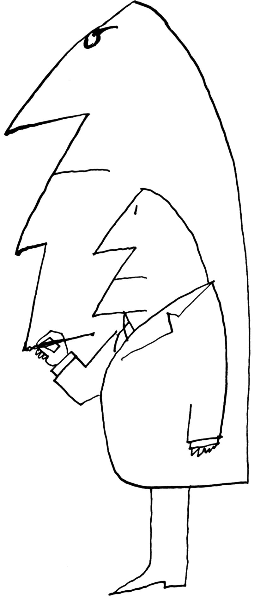

本图来源于《纽约客》1963年2月16日。
Saul Steinberg，Untitled drawing，ink on paper.
Originally published in The New Yorker，February 16，1963.
©The Saul Steinberg Foundation/Artists Rights Society（ARS），New York
想象一下这样的情境：一个名叫萨姆（Sam）的年轻人正在接受催眠。催眠师给了萨姆一个催眠后的建议，告诉他，当时钟走到4点的时候，他会（1）到衣橱里去拿雨衣和套鞋，穿上它们；（2）拿上一把伞；（3）走过八个街区来到超市，买上六瓶波旁酒；（4）回家。萨姆被告知，一旦他重新进入自己的公寓，他将“醒来”，重新找回自己。
当凌晨4点钟声敲响的时候，萨姆立即走向衣橱，穿上雨衣和套鞋，抓起雨伞，艰难地走出大门，寻找波旁威士忌。这件事情有些奇怪的地方：（1）这是一个晴空万里、阳光灿烂的日子；（2）半个街区外有一家卖波旁威士忌的酒店，价格和八个街区外的超市一样；（3）萨姆不喝酒。
萨姆回到家，打开门，走进自己的公寓，恍惚中发现，自己正穿着雨衣和套鞋站在那里，一手拿着雨伞，一手拿着一大瓶酒。他看起来非常困惑。他的朋友催眠师问道：“嘿，萨姆，你去哪儿了？”
“哦，只是去了商店。”萨姆说。
“你买了什么？”
“嗯……嗯……我好像买了这个波旁酒。”
“你不喝酒，是吗？”
“是的，但是……嗯……嗯……在接下来的几个星期里我要有很多娱乐活动，和我的一些朋友一起。”
“你怎么会在这么好的天气穿戴这些雨具？”
“其实每年这个时候天气变化都很大，我不想冒任何风险。”
“但是天空没有乌云呀！”
“是的，你永远也不会知道……”
“顺便问一下，你在哪里买的酒？”
“哦，嘿嘿。嗯，嗯……我去了超市。”
“你怎么会跑那么远？”
“嗯，嗯……嗯……有如此美好的天气，我想这可能是因为我很有兴致才走了很长一段路。”
人们持有为自己的行为、看法和感觉辩护的动机。当他们做某件事情的时候，如果可能的话，他们会让自己（和其他人）确信这是一件合乎逻辑的事情。萨姆做那些蠢事是有充分理由的，因为他被催眠了。但因为萨姆不知道催眠后的指令，而且他很难接受这样一个事实，即他会毫无意义地去行动。他竭力使自己（和他的朋友）相信他的疯狂是有道理的，他的行为是完全明智的。正如我们在第2章中所看到的，我们的许多行为都会受到一些未知因素的支配。之后，当我们被要求解释自己的行为时，我们试图构建出一个有意义的故事，同时满足我们的愿望，让自己和他人看起来都不错。这便是自我辩护的本质。
假设你正处在一场自然灾害之中，比如地震，你周围的建筑都倒塌了，周围的人有死有伤。你感到恐惧。你需要为自己的恐惧寻找一个理由吗？当然不需要。证据就在你的周围，受伤的人和被摧毁的建筑物可以为你的恐惧提供充分的解释。但假设地震发生在邻近的一个城镇。你感觉到了震颤，你听到了那里所发生破坏的故事。你虽然害怕，但却不在事发地。你和周围的人都没有受伤，你所在城镇的建筑物也没有损坏。你需要更多的理由来解释为什么你会恐惧吗？是的。就像我们那个穿着雨衣和套鞋被催眠的朋友一样，你持有去理解自己感受的动机。由于你在自己的周围没有发现什么可怕的东西，所以你会倾向于给自己寻找害怕的理由。
这个案例不是虚构的，它实际上就发生在印度。在地震过后，调查人员收集并分析了地震发生地和附近居民中传播的谣言。他们的发现是惊人的。一位印度心理学家贾木纳·普拉萨德（Jamuna Prasad）发现，1居住在离震中不远邻村的人们，也就是那些能感觉到震颤但没有迫在眉睫危险的人开始散布即将毁灭的谣言：洪水会冲向他们；2月26日将是洪水暴发和毁灭的日子；在月蚀的那天，还会暴发一次严重的地震；几天之内就会发生一场气旋；其他一些无法预见的灾难也将出现。
为什么人们会杜撰、相信和传播这样的故事？这些人是受虐狂吗？他们有妄想症吗？显然，散布即将发生灾难的谣言不会起到鼓励作用，让人们感到平静和安全。一种解释是，人们非常害怕，但是由于他们缺乏足够的理由来解释这种恐惧，便制造了自己的恐惧，这使他们不至于显得愚蠢。毕竟，如果飓风正在来的路上，难道我不应该因为恐惧而瞪大眼睛吗？德迦南德·辛哈（Durganand Sinha）2对谣言的研究证实了这一解释。辛哈调查了印度某个村庄在发生类似灾难后传播的谣言。普拉萨德的研究与辛哈的研究主要不同之处在于，辛哈的研究对象直接经历了灾难并目睹了破坏。他们很恐惧，但他们有充分的理由感到恐惧；他们没有必要为他们的恐惧寻找更多的理由。因此，他们的谣言没有预示灾难的来临，也没有严重地夸大。的确，如果说有的话，也是一些令人欣慰的谣言，比如有人预言，水的供应将会在短期内恢复。
认知失调理论
受这些发现的启发，利昂·费斯汀格（Leon Festinger）提出了有关人类动机的伟大理论，他称之为认知失调理论。3这是一个非常简单的理论，但正如我们将看到的，它的应用范围很广。费斯汀格将认知失调描述为一种紧张状态，当一个人简单地持有两种心理上不一致的认知（观念、态度、信仰、观点）时便会发生。两种认知如果相互对立，则是不一致的。认知失调的经历是令人不快的，所以人们有动力去减少失调；这类似于减少饥饿或口渴等内驱力因素的过程——只不过在这里，内驱力来自认知上的不适，而不是生理需要。持有两种相互矛盾的观点就是与荒谬搞暧昧，正如存在主义哲学家阿尔贝·加缪（Albert Camus）所言，人类是这样一种生物，他们一生都在试图说服自己他们的存在不是荒谬的。
我们如何让自己相信我们的生活不是荒谬的？也就是说，我们如何减少认知失调呢？我们的常用方式是改变一种或两种认知，使它们彼此之间更加一致，或者增加更多的认知，帮助弥合原有认知之间的差距。
让我来给大家举一个很多人都非常熟悉的例子。假设一个人喜欢吸烟，然后看到反对吸烟的信息。吸烟者会出现失调：“我吸烟”的认识与“吸烟是肺癌的主要病因，也是不健康的”认识不一致。对这个人来说，最明智、最有效的减少失调的方法就是戒烟。“吸烟致癌”的认识与“我不吸烟”的认知是一致的。
但对大多数人来说，戒烟并不容易。我们可以设想这样一位长期吸烟的人莎莉（Sally）。她将采取什么措施来减少不和谐？在所有的可能性中，她会尝试在有关“吸烟会致癌”的其他认知上做工作。莎莉可能会试图淡化吸烟与疾病之间的联系，用医学尚不完美的想法安慰自己。毕竟，她可能会说，科学家们不是总在改变他们对你有好处理由的看法吗？她可能会找一些聪明的吸烟者，通过这样做，让自己相信如果黛比（Debbie）、妮可（Nicole）和拉里（Larry）吸烟，那就不会有那么大的危害。她可能会转向超轻型或有机品牌，并欺骗自己说它更健康。最后，她可能会加上与吸烟一致的认知，试图使吸烟行为不那么荒唐，尽管有危险。她也许会提高自己对吸烟的重视，她认为吸烟不仅令人愉快，而且对放松也是必不可少的：“我的寿命可能更短，但却会更愉快。”或者，她可以通过建立浪漫的、邪恶的自我关怀的形象，通过吸烟藐视危险，来试图使吸烟成为一种美德。4莎莉可以通过从认知上尽量减少危险或者夸大危险在她生活中的重要性来为自己的行为辩护。她可以通过改变现有的态度，通过构建一种新的态度，或者通过两者兼而有之来获得解脱。所有这些努力都通过淡化追求疾病的荒谬来减少失调。
在1964年，大约有一半的美国人吸烟。当年，美国医务总监办公室的报告提醒公众注意吸烟的危险，5在这份报告发表之后，一项调查被用来评估人们对吸烟与癌症之间联系的新证据的反应。不吸烟者压倒性地相信健康报告；只有10%的人怀疑吸烟是导致这种疾病的原因。然而，吸烟者对该报告进行了批评。40%的重度吸烟者怀疑这两者之间是否存在联系。他们也更容易使自己的习惯合理化：高于非吸烟者两倍以上的吸烟者认为生活充满危险，吸烟者和非吸烟者都有可能生病。
吸烟者也可以通过最大限度地改变他们的习惯来减少失调。另一项针对每天抽一到两包烟的人的研究发现，60%的人认为自己是“温和的”吸烟者，其余40%的人认为自己是重度吸烟者。6认为自己是温和的人比那些自称是重度吸烟者的人更了解吸烟的长期有害影响。温和的人通过让自己相信每天抽一两包烟并不是真的那么有害来减少失调。温和与严重毕竟都是主观的判断。
现在想象一下那些知道自己是重度吸烟者、且知道吸烟有害的吸烟者的困境，他们试着戒烟但却失败了。这些人会怎么做？为了找出答案，里克·吉本斯（Rick Gibbons）7和他的同事们研究了重度吸烟者，这些人曾在一家戒烟诊所接受治疗，戒烟了一段时间，但后来又恢复了吸烟。难道他们接受了这种程度吸烟的危害，并准备生病和死亡？绝非如此。相反，他们以不同的方式减少了认知失调：让自己相信吸烟并不像他们最初想象的那么糟糕。同样，一项跟踪135名立下新年决心学生的研究也支持了这一观点。8那些决心戒烟、减肥或锻炼的人最初感觉很糟，但在很短的时间里，便成功地淡化了这种决心。
当然，吸烟者只对自己的健康感到担心，或者担心那些可能与他们生活在一起的二手吸烟者。但如果你是一家大型香烟公司的高管，在全球范围内对香烟的销售做出最大的承诺，那又会怎样呢？如果吸烟确实会致癌，那么从某种意义上说，你对数百万人的疾病和死亡负有部分责任。这种认识会产生一种痛苦的失调。你的认知“我是一个正派、善良的人”会和你的认知“我正在促使数百万的人过早死亡”不一致。为了减少这种失调，你必须努力让自己相信吸烟是安全的——这不是一件容易的事情，因为你经常面对反对吸烟的言论以及对你是邪恶的指责。你还必须反驳大量的证明香烟和疾病之间联系的科学证据。此外，为了证实你对证据的怀疑，你也可以每天抽一两包。如果你的需要足够大，你甚至可以说服自己香烟对人有好处。因此，为了把自己看作是聪明、善良和正确的人，你采取了愚蠢、错误和有害健康的行动。
这种分析听起来如此美妙，以至于几乎难以置信。1994年，国会举行了关于吸烟危害的听证会。在这些听证会上，各大烟草公司的高管们都承认自己是吸烟者，并厚颜无耻地争辩说，香烟不比玩电子游戏或吃零食更有害或更容易上瘾！在1997年的一次听证会中，美国领先的香烟制造商菲利普·莫里斯（Philip Morris）的总裁兼首席执行长詹姆斯·摩根（James J.Morgan）说，香烟在药理上不会上瘾。“你看，我喜欢熊软糖而且会吃熊软糖。”摩根说：“假如我不喜欢吃软糖，我肯定不会对它们上瘾。”9
摩根有可能是在撒谎。但我感到他所说的要比撒谎复杂得多。我的猜测是，随着时间的推移，像摩根这样的人开始相信自己的谎言，并试图对自己进行欺骗。10
人们的自我欺骗甚至会直接导致他们的自我毁灭。1997年，一个不为人知的教派“天堂之门”的39个成员，被发现死在加州兰乔圣菲的一个豪华庄园里，他们实施了这起集体自杀事件。几周前，这个邪教组织的一些成员走进了一家专卖店，购买了一台昂贵的大功率望远镜，以便能更清楚地看到哈雷-波普彗星以及他们坚信跟在它后面飞行的宇宙飞船。他们确信，当彗星接近地球时，就是通过自杀来摆脱他们的“地球容器”（他们的身体）的时候，这样他们的灵魂就可以被飞船接走。购买了望远镜几天后，他们把它带回店里，礼貌地要求退款。当经理问这样做的理由时，他们抱怨说望远镜有缺陷：“我们找到了彗星，但我们找不到跟踪它的宇宙飞船。”不用说，根本不存在宇宙飞船。但假如你确信太空船的存在，以至于你准备魂归飞船，而你的望远镜却没有发现它，那么很明显一定是望远镜存在什么问题！
“天堂之门”的成员可能持有一种悲惨的错误信念，但他们阐明了认知失调理论的核心科学贡献：与邪教成员一样，每当我们感到对宗教、政党、有魅力的领袖或意识形态强烈忠诚的时候，以及当这些忠诚受到事实挑战的时候，我们会提出各种歪曲事实的证据。连尼·布鲁斯（Lenny Bruce），一位敏锐的喜剧演员和社会评论家（几乎可以肯定，他从来没有接触过有关认知失调的理论），对1960年理查德·尼克松（Richard Nixon）和约翰·F·肯尼迪（John F.Kennedy）之间的总统竞选活动有以下见解：
我会和一群肯尼迪的粉丝一起观看辩论，他们的评论是：“他真的是在屠杀尼克松。”然后当我们走进另一个公寓，尼克松的粉丝会说：“你觉得他投向肯尼迪的炮弹怎么样？”于是我意识到，每个团体都钟爱他们自己的候选人，如此一来那个家伙便会变得明目张胆——他会对着镜头说：“我是个贼，一个骗子，你听到了吗？我是你在投票选举总统这件事情所做过的最糟糕的选择！”即使这样，他的追随者也会说：“现在你有了一位诚实的男人可供自己选择。需要一位有实力的人物来承认这一点。我们需要这样的人当总统。”11
五十多年之后，总统候选人唐纳德·特朗普（Donald Trump）对他的支持者同样无条件的忠诚感到惊讶：“我可以站在第五大道的中间，射杀某人，却不会失去任何选民，你相信吗？如出一辙，这令人难以置信。”12
减少失调与非理性行为
认知失调是两种基本动机冲突的结果：我们努力保持正确，这促使我们密切关注他人正在做的事情，听取值得信赖的交流者的建议；我们努力相信我们是正确的（明智的、体面的、善良的）。有时候，我们的动机是正确的，我们的动机使我们相信自己是在朝正确的方向行事：我们会寻找并注意一些信息（例如，关于吸烟的风险）。对失调的理解有助于解释为什么人类的思维是非理性的，而不是理性的。不管多聪明，那些正在减少失调的人都会相信自己是对的，以至于他们经常会做出非理性的行为。我所说的“非理性”，是指他们的不适应行为会阻碍他们了解基本事实，或阻碍他们找到解决问题的真正办法。
在实验室里，研究人员已经充分展示了人们努力减少失调的非理性。假设你对死刑能否阻止人们杀人有强烈的感觉。我现在可以就这个问题的两个方面给你提供一系列的论据；其中一些论据是合理的，另外一些则是愚蠢的。如果你的思维是理性的，那么无论你个人的观点如何，你都应该记住最可信的论点和最不可信的论点。但是失调理论会预测到什么呢？支持你个人观点的愚蠢论点会导致一些失调，因为它会导致人们对这个观点或者赞同这个观点的人的智慧发生怀疑。同样，问题的另一个方面是，一个明智的论点也会导致一些失调，因为这个论点意味着另一方比你所想象的更聪明或者更敏锐——或者，出现你所不愿意看到的结果，他们可能是正确的。因为这些争论可能引起失调，我们会尽量不去想它们。失调理论预测人们会记住那些赞同自己观点的似是而非的论点以及赞同对方观点的不可信的论点。13
许多研究对这种现象进行了验证。查尔斯·洛德（Charles Lord）、李·罗斯（Lee Ross）和马克·莱佩尔（Mark Lepper）14在一项研究中，选择了斯坦福大学几位反对死刑和赞成死刑的学生。他们向学生们展示了两篇研究论文，论文讨论了死刑是否会对暴力犯罪起到威慑作用。其中一项研究证实了学生们的已有看法，而另一项研究则没有证实。如果这些学生是完全理性的，他们可能会推断出这是一个复杂的问题，因此，两组学生可能会在有关死刑的看法上互相接近。另一方面，认知失调理论则预测，他们会对两篇论文加以歪曲：他们会将那篇证实了自己看法的论文牢记在心，并为其确凿无疑地支持了自己的看法而兴奋不已；而对不能证实自己看法的那篇论文，他们则会寻找方法上或者概念上的错误，并拒绝来自它的影响。这就是他们的发现。事实上，在看到从两个方面提供的这份材料之后，两组学生的看法不仅没有更加接近，他们的意见分歧反而比此前更加明显了。这一过程大概可以说明这样的事实：在类似政治或宗教之类的问题上，不管我们的论点多么有力和公正，那些笃信某种观点的人也几乎不可能按照我们的方式去对事物进行观察。15这项研究揭示了当今美国政治话语两极分化的状况。
认知失调理论解释了为什么很多人的行为都是非理性的，而且从他们的内心来说，他们也是这么认为的。如果你问那个被催眠的年轻人为什么在晴朗的日子穿雨衣，他会想出一个他认为明智的答案；如果你问菲利普·莫里斯的副总裁为什么抽烟，他会为你提供一个对他来说有意义的理由——他会告诉你，存在一个压力粉碎器对每个人的健康会有多好。如果你问参加死刑实验的人为什么记住了一组特定的论点而非其他论点，他们会坚持认为反对他们观点的证据是有缺陷的。
毋庸讳言，我们都有能力理性地行动。但我的观点是，当我们需要减少失调时，我们都会做出不理性的行为。当我们讨论自我辩护需要所产生的一些广泛的影响时，我们会看到人类行为的两个方面。让我们从决策过程开始考察，这个过程显示了人类可以连续地快速在极端理性和极端非理性状态之间转换。
决策导致的失调
假设你决定要买一辆新车。这会涉及一大笔资金，因此显而易见，它是重要的。考察一番后，你会在购买一辆运动型多用途汽车还是一辆全电动汽车之间犹豫不决。这两款车都有优点和缺点。越野车会很方便，你可以在长途旅行时用来装东西，睡在里面，而且它有足够的动力，但是它很费油，而且不好停车；电动汽车不那么宽敞，你不能开很远的距离，你会担心它的安全，但是它的购买和操作成本较低，开这样的车会更有趣，你打听到它有很好的维修记录。我的猜测是，在你做出决定之前，你会尽可能多地搜集信息。你可能会上网，并对不同的产品和型号进行抽样审查；也许你会与那些拥有SUV或电动汽车的朋友交流；你可能会去经销商那里试驾，看看每辆车的感觉如何。所有这些预决策行为都是完全合理的。
现在你作出了某种决定：你买的是全电动汽车。接下来会发生什么？你的行为将开始改变，你将不再搜集有关所有型号汽车的客观信息。你可能会花更多的时间和其他车主交谈。你将开始谈论它的低碳，以及它在充电过程中的作用。我的猜测是，你不会花任何时间去思考你不能在你的新车里住宿这类信息。同样，你的大脑也会轻易忽略这样一个事实，即驾驶你的新车遇到碰撞是危险的，刹车也不是很灵敏。
你是如何改变主意的？在作出决策之后——尤其是某个困难的决策或某个涉及大量时间或金钱的决策之后——人们几乎总会经历失败。因为他们所做出的选择很少是完全正面的，而被拒绝的选择也很少是完全负面的。在这个例子中，你对自己购买电动汽车的认知与你对汽车可能存在的缺陷的认知是不一致的。同样，你想购买的其他型号汽车的所有积极的方面也都与你的认知不一致，即你没有购买其中的一辆。减少这种失调的一个好方法是找出你选择的汽车的排他性正面信息，避免负面信息。因此我推测，最近购买某车型汽车的人会开始选择性地阅读广告，相比最近没有购买过该车型汽车的其他人，他们会阅读更多关于他（或她）的汽车的广告。而且，新车的车主们往往会避开其他型号汽车的广告。这正是研究人员在今天的广告阅读器研究中发现的，16这要归功于社交媒体，人们不必花费过多努力就能获得与他们刚买的车相符的信息，认同他们现在所持有的想法，回避任何与之不相符的信息。
人们并非总需借助麦迪逊大街[1]来获得安慰。在安慰自己方面，他们可以做得更为出色。杰克·伯里汉姆（Jack Brehm）17的实验证明了他们是如何做到这一点的。伯里汉姆扮作市场调研人员，给几位女士展示了8种不同的电器（烤面包机，电动咖啡机，三明治烤架等等），并要求她们根据每件电器的吸引力来给它们评分。作为奖赏，每位女士都被告知可以得到其中的一件电器作为礼品，并允许她在两件自己评定为同等吸引力的电器中任选一种。等她选好之后，就将这件电器包装好送给她。几分钟后，要求她再次对这些电器进行评价。结果发现，在得到了自己挑选的电器后，每位女士都对该电器的吸引力做出了较高的评价，而降低了那件可以得到但自己没有挑选的电器的评价等级。
我们又一次看到了决策所引起的认知失调：对所喜欢的对象的任何负面认知，与选择了它的认知之间会产生失调；对没有选择的对象的正面认知，与没有选择它的认知之间也会产生失调。为了减少失调，人们在认知上分散了各种选择。也就是说，在作出决策之后，伯里汉姆研究中的女士们，会强调自己决定选用的电器的正面特性，同时贬低它的负面特性；而对自己决定不选用的电器，则强调它的负面特性，同时否认它的正面特性。
为个人选择进行辩护的倾向，并不仅仅局限于消费者决策。事实上，有研究发现，类似的过程甚至可能影响人们的爱情关系，以及人们打算与那些可能成为伴侣的人进行交往的意愿。在丹尼斯·约翰逊（Dannis Johnson）和卡莱尔·罗斯鲍特（Caryl Rusbult）18所做的一项研究中，研究者要求大学生们评价校园里新兴的一种电脑约会服务成功的可能性。被试们看到了一些异性的照片，并且相信这些人是约会服务的申请者。接着，要求他们对这些申请者的吸引力进行等级评定，而且评定与他（她）可能的约会使自己快乐的程度——合乎实际地提出某种可能性。这项研究的结果与伯里汉姆有关电器的发现非常类似：学生们对自己当前的恋爱对象投入越多，他们对研究中所提供的有可能成为伴侣的人吸引力的评价越差。在后来的一项实验中，杰弗里·辛普森（Jeffry Simpson）和他的同事们19也发现，与那些还没有建立起稳固恋爱关系的人相比，那些已经建立起稳固关系的人会认为其他异性的身体和性吸引力较低。另外，他们还发现，这种效应只是对“合适的他人”起作用；假如所提供的人选年龄有些偏大或者是同性，那些建立了忠诚的恋爱关系的人便不会贬低这些人的吸引力。简言之，没有威胁，就不会出现失调；没有失调，便不会去贬低他人。
无论我们谈论的是电器还是恋人，一旦作出了某种坚定的承诺，人们便会倾向于关注自己所做选择的积极方面，而忽略自己所拒绝的其他选择的吸引力。
失调会降低意识吗？ 正如我们在第2章中所看到的，我们大多数人都不擅长预测我们适应负面事件会有多快。现在我可以告诉你理由：因为人们不知道如何成功地减少失调。既然过去已经成功地做到了这一点，那么为什么他们不确定自己将来也会做到呢？答案是减少失调的过程在很大程度上是无意识的。人们不会坐下来说，“我想我现在该减少一些失调了”。例如，当你所爱的人抛弃了你时会发生什么？随着时间的推移，你会发现这个人不再那么值得爱了，甚至发现他可能是一个无法忍受的自恋狂。你会开始相信，自己应该得到更好的生活，或者一个人会过得更好。这个过程之所以会奏效，是因为一切都是在意识水平之下发生的，没有任何意图。不幸的是，这种内隐性使得失调在得以有效解决的同时，也容易被遗忘。因为这个过程是无意识的，所以我们没有意识到它也会在未来保护我们免受痛苦。
假如英格丽·褒曼（Ingrid Bergman）没有重新回到她的抗纳粹英雄丈夫身边，而是和她的情人亨弗瑞·鲍嘉（Humphrey Bogart）一起待在摩洛哥，那么在经典电影《卡萨布兰卡》的结尾会发生什么呢？正如鲍嘉在一次令人心碎的著名演讲中所说的那样，她会后悔吗？——“也许不是今天，也许不是明天，而是很快，用尽你的余生。”还是她会后悔把鲍嘉独自一人留在雨中的机场？我有理由怀疑这两个问题的答案都是否定的，鲍嘉所言听起来有道理但却是错误的。她也许会后悔今天和明天所做的选择，但是很快（以及她的余生）她便会相信自己已经作出了最好的决定。20但考虑到我们在生活中所作的决定是无数的，我们很少有值得注意的决定——这要归功于我们减少失调的能力。
失调是普遍存在的吗？ 认知失调的经验有多普遍？这是美国人最常经历的事情，还是人类生活的一部分？我们不可能对此作出肯定的回答，因为失调实验并未在世界所有地方进行检验。但我可以这样说：虽然大多数研究都是在北美地区进行的，但是在世界上做过这类研究的任何一个地方，都已经被证明是有效的。
这项研究得到了广泛的验证。认知失调理论已经得到了上千项研究的支持，其中一些研究领域包括认知神经科学，甚至是对灵长类的研究。在某些方面，猴子就像那些在电器之间面临选择的家庭主妇一样：如果让它们在两盒不同颜色的食物中作出选择，它们很可能会选择自己曾经选择过的食物——尽管还存在其他选择。这项研究表明，如果事后判断不一致导致我们的祖先坚持了某个经过尝试且真实的选择，而拒绝了一些未经检验的新东西（从我们人类的经历来看，这可能是危险的），那么这种不一致便有可能促进人类的进化。21
人类在认知失调中发挥了“认知”作用，在很小的时候，人类就表现出了认知上的正当性。22我的一个朋友带她3岁的女儿去公园玩，给了她一些贴纸。另一个小女孩走近她们。“你不想把你的贴纸给那个小女孩玩吗？”我的朋友问。孩子思考了一会儿说道：“妈妈，那个小女孩不喜欢贴纸。”3岁的孩子已经能够降低失调！她在保留了自己所有贴纸的同时，成功地将自己视为一个好女孩。
为了支持失调是普遍存在的观点，艾迪·哈蒙-琼斯（Eddie Harmon-Jones）和他的同事们23使用了功能性磁共振成像技术来监测大脑特定区域的神经活动，当时人们正在经历各种失调：对他们选择或者拒绝的事物进行评分，将并不舒服的检测体验说成是相当令人愉快的，或者是面对不受欢迎的（引起失调的）信息。处于失调时大脑中被激活的区域包括前额叶皮质内的特定区域，该区域显著地参与了计划与决策。在一项研究中，人们试图处理与他们所偏爱的总统候选人不一致或一致的信息，德鲁·威斯顿（Drew Westen）和他的同事们24发现，当一个人面对不一致的信息时，大脑的推理区域实际上被关闭了，当恢复一致时，大脑的情感回路会“快乐地”亮起来。正如威斯顿所说的，人们转动“认知万花筒”，直到这些片段进入他们想要看到的模式，然后大脑通过激活与快乐有关的电路来补偿它们，似乎认知失调的感觉确实会让大脑受伤。
世界上几乎任何一个地方都存在着不和谐现象，但这种现象出现的形式却各不相同，所形成的认知内容可能因文化而存在差异。例如，在一些个体主义不明显的社会里，减少失调的行为可能存在更为普遍的形式。25在这样的文化里，自己的行为让别人感到羞辱或失望，会比为自己的不当行为辩护，更有可能让人们感到失调。这正是日本社会心理学家村上坂井（Haruki Sakai）26在他的实验中发现的。在日本，许多人会间接地体验到自己所认识和喜欢的人引起的失调，他们会改变自己的态度，以迎合那些给自己带来失调的朋友。此外，日本人只有感觉到自己是在别人的关注下作出决策、而不是私下作出决定时，才有可能认为自己所作的决策是合理的；而对于美国人来说，这种思考模式正好被颠倒了过来。27人们对所作选择的隐私或公众能见度的感知会与文化因素相互作用，以确定是否引起了失调、是否需要对选择的合理性作出判断。
不可挽回性的重要作用
我们所讨论的例子的一个关键特征是这个决定的相对不可挽回性——一个人无法挽回自己所做的事情。这里需要做一些解释。正如我们所看到的，当你试探性地考虑买车或者作出其他决定时，你不需要花费精力说服自己你作出的是明智的选择。但一旦你作出了决定，便不可挽回，一切都改变了。
关于不可挽回性重要作用的一些直接证据，来自于对赛马场赌徒认知循环的研究。赛道是一个考察不可挽回性的理想场所，因为一旦你下了赌注，你就不能回去告诉坐在窗口后面的那位好人你改变了主意。罗伯特·诺克斯（Robert Knox）和詹姆斯·英克斯特尔（James Inkster）28在研究中只是拦住了那些正在下两美元赌注的人。他们已经选定了他们要下赌注的马，并准备下注，这时研究人员问他们是否确信他们的马会赢。因为他们正在去下两美元赌注窗口的路上，所以他们的决定是可以撤销的。当另外一些赌徒离开下注窗口的时候，研究者拦住了他们，也询问了他们对自己所选马匹胜算的把握有多大。结果表明，那些已经为自己所选的马匹下过赌注的人，比那些正要去下赌注的人感到胜算把握更大。当然，事实上除了最终结果之外，任何事情都不会对胜算产生影响。
现在，让我们从赛马场来到哈佛大学校园，丹尼尔·吉尔伯特（Daniel Gilbert）29在对一群学习摄影感兴趣的学生进行测试时证实了不可挽回假设。他让他们拍摄完一卷胶卷，打印出其中的两张照片，让他们对照片评级，并选择了其中的一张。一些学生可以在五天内替换照片，而另一些学生则被告知他们所做的第一选择是不可挽回的。在两天、四天、九天之后，吉尔伯特分别联系了他们，看看他们对照片的感觉是否发生了改变。在第一天做出不可挽回选择的人比那些可以交换照片的人更喜欢他们的选择。结果再一次显示，一旦某个决定是不可挽回的，人们便会竭力让自己为所作出的选择感到高兴。由此可见，一旦人们感到已经无能为力，他们便会更加确信自己作出了明智的决定。
尽管决策的不可挽回性总会增加失调，并且会增强人们减少这些失调的动机，但在一些场合，人们即便改变已经作出的决定也会感受到失调。几年前，罗伯特·西奥迪尼（Robert Cialdini）30通过在一家汽车经销商做临时销售人员，发现了其中的奥妙。（西奥迪尼做了很多富有想象力的社会心理学现场研究，这是他最有趣的研究之一。）这是一种常用且颇为有效的策略，称之为虚报低价，或者用低价来让消费者就范。它是这样发生作用的：某位顾客找到某位汽车销售人员，准备为他梦寐以求的一款汽车支付19300美元——这个价格被宣传成了难以置信的便宜货。那位销售人员微笑着说：“我卖给你一辆更好的”，然后以18942美元的价格把那辆车卖给顾客。买方对这笔交易感到非常兴奋，于是同意了这笔交易，并开出了首付支票，兴高采烈将那辆新车开回了家。不过，10分钟后，那位销售人员带着一副绝望的表情找到他；说自己在计算上似乎犯了一个错误，而销售经理发现了。这辆汽车的价格实际上是19384美元。这时，买家会怎么做？这位顾客可以在其他地方买到更便宜的车，也就是说，他所作出的购买这辆车的决策并非无可挽回。尽管从这位销售人员那里购买这款车的理由（交易价格）已经不存在了，但是与一开始就报价19384美元相比，更多的人会将交易继续下去。
这到底是怎么回事呢？这里至少有三个重要的问题值得注意。首先，虽然客户的购买决定毫无疑问是可逆的，但是签署首付支票的行为却形成了一种潜在的承诺。其次，这种承诺引发了对某种快乐体验的期待：开着一辆新车出去。如果因为中止不进行交易而导致预期事件不能发生，将会带来失调和失望。再次，尽管最终价格比推销员所说的要高，但只比其他地方的价格略高一点。在这种情况下，顾客往往会说：“哦，管他呢。我已经来了，而且已经填了表格，为什么还要再等呢？”而今，当人们购买汽车的时候，低价策略已经很少起作用了，因为互联网使人们变得更聪明、对情况更加了解。但这种策略仍然适用于我们不知情的许多其他情况，比如用一个新的合同取代过期的手机合同，这个新的合同便有可能隐含着某种消费陷阱。
不道德的行为决策 一个诚实的人怎么会变坏呢？反之，我们怎样才能让一个人变得更加诚实？一种方法就是通过让他做出某个艰难的决定产生失调。假设你选修了一门艰深的生物学课程，你的成绩将取决于你正在参加的期末考试。现在面对着一个你非常熟悉的关键问题，由于焦虑，你的脑子里一片空白，你坐在那里紧张得汗流浃背。猛然间你抬头一看，坐在你前面的女生，竟然是班上最聪明的那一位（幸运的是，恰好她的笔迹也是最清晰的）。你稍稍低一下头，就能看到她已经完成的有关这个关键问题的答案。你会怎么做？你的良心告诉你，作弊是错误的——然而，如果不作弊，你必然会得到糟糕的分数。你和你的良心在斗争。无论你是否决定作弊，你都注定会感受到失调。如果你作弊，你的认知“我是一个正派的、有道德的人”与你的认知“我刚刚做了一件不道德的事情”会产生不一致。如果你决定抵制诱惑，你的认知“我想得到一个好分数”与你的认知“我本可以以一种确保得到一个好分数的方式行事，但我却没有这样做”也会产生不一致。
假设，经过了一番艰苦的思想斗争，你决定作弊。那么如何减少由此而导致的失调？在你继续阅读之前，请考虑一下。减少失调的一个方法是尽量减少你所选择行为的负面影响，并最大限度地增加其正面影响——就像杰克·伯里汉姆实验中的女士们在选择一件电器后所做的那样。在这种情况下，减少失调最有效的方法是改变你对欺骗的态度。如果你作了弊，你便会采取更为宽容的态度。你的推理可能是这样的：“在某些情况下作弊并不是那么糟糕。只要没有人受到伤害，这的确并非很不道德的事情。任何人都会这么做。因此，这是人性的一部分——那又怎么会是坏事呢？因为它是人性所共有的，所以那些被发现作弊的人不应该受到严厉的惩罚，而应该得到理解。”
但是假设，经过了一番艰难的思想斗争，你决定不作弊。你会怎样减少失调——也就是说，使你的行为与你的信念一致呢？你可以再一次改变你对行为道德的态度，但方向相反。为了证明“放弃一个好分数”是正当的，你必须让自己相信：欺骗是一种令人发指的罪恶，是一个人所能做出的最卑鄙的事情之一，欺骗者应该被发现并受到严厉的惩罚。
这里需要记住的一点是，以这两种不同方式行为的两个人，一开始的态度几乎是一样的。他们的决定可能相差甚远：一个是在抵制的范围内，但决定欺骗；另一个是在欺骗的范围内，但决定抵制。然而，一旦做出了决定，他们对欺骗的态度就会因所作出的决定而迥然不同。
这些推测在贾德森·米尔斯（Judson Mills）31所做的一项针对六年级学生的实验中进行了验证。米尔斯首先测量了他们对欺骗的态度。然后，他让孩子们参加竞争性考试，向优胜者颁发奖品。这种情况是预先安排好的，不作弊几乎是不可能取胜的；而且，孩子们很容易作弊，他们会认为自己作弊不会被发现。正如你所预料的，一些学生作了弊，而另外一些则没有作弊。次日，这些六年级的学生再次被要求说明他们对作弊的看法。总体而言，那些作弊的孩子对欺骗变得更加宽容，那些抵制作弊诱惑的孩子对欺骗采取了更加严厉的态度。
设想一下米尔斯的实验对你而言意味着什么，设想你已经站到了金字塔的顶端。在一生中，你会面临着许多决策，这些决策会引导你在金字塔的不同方向之间变换：主修什么专业？拒绝与做过一些违法或不道德事情的朋友合作，或者不去破坏一切？是保持一段浪漫的关系，还是离开？是相信一些阴谋说，还是去Snopes.com[2]或Politi Fact[3]寻求真相？无论怎样，当你朝着某个方向迈出一步的时候，你总会感受到失调——现在你会被激励为减少失调而去为自己所做的事情辩护。反过来，这样的辩护会让你更难改变主意，即便是在你应该做出改变的时候。当你到达金字塔底部的时候，你将与那些面临同样的困境但作出不同决定并从相反的方向滑下金字塔的人相距甚远。你会确信自己的决策是绝对正确的，而那些从另一边溜下来的人都是白痴或骗子。（你觉得他们对你的感觉又会如何？）
金字塔比喻也有助于帮助我们理解诱设（entrapment）过程中的态度和行为是如何变化的，或者人们如何从一开始做出某个很小的、冲动性的决策，而随着时间的推移，发现自己的行为与最初的目标和意图已经相去甚远。诱设过程可以通过可控的实验条件来进行考察。假设你想寻求某人对你所从事的一项宏大事业进行帮助，但你很清楚要让这个人做到这一点是极为困难的，需要付出相当多的时间和努力，这个人肯定会拒绝。你应该如何去做呢？一种可能是让这个人参与到工作中的某个细微的环节——某个十分简单以至于他（她）根本不会想到要拒绝它，迈出这一步有助于使这个人投入到你的“事业”之中。一旦人们这样去做了，他们满足你更大要求的可能性便会增加。
乔纳森·弗里德曼（Jonathan Freedman）和斯科特·弗雷泽（Scott Fraser）32的研究证实了这一点。他们试图劝导一些房主在自家的前院竖起一块写有“谨慎驾驶”的巨大招牌。由于这块招牌很难看而且很惹眼，大多数居民拒绝了这一做法，只有17%的人表示同意。但是，对另外一组居民，则首先由实验者对他们加以“软化”——让他们签署一份赞同安全驾驶的请愿书。由于签署请愿书是一件轻而易举的事情，所有受到邀请的人都签署了。几周后，另外一位实验者带着写有“谨慎驾驶”的那块很难看的招牌，找到了每一位居民。这一次，超过55%的居民允许在自家的土地上竖起这块招牌。因此，当个人作出较小的承诺时，他们就更有可能在这方面进一步作出承诺。
这种通过要求帮小忙来促使人们同意提供更大帮助的做事方法，被称之为登门槛技术。这种技术之所以有效，是因为它通过请人们帮小忙，而获得了让人们同意提供更大帮助的理由。帕特丽夏·普利纳（Patricia Pliner）和她的同事们也得出了类似的结果。33当他们直接要求一些人向美国癌症协会捐款时，46%的人表示同意；但是，当他们要求这些人提前一天戴上领针宣传募捐活动，然后在第二天向他们寻求捐款时，大约有两倍的人同意了。通过自我辩护来诱发人们的行为，可能导向利他主义和社会赞许的目标，但也可能导向破坏性的、不利的目标，我们将在本章的结尾看到这一点。
不充分辩护心理
改变态度，作为减少不和谐的一种手段，并不局限于作出决策之后。它还可能在无数其他情况下出现，包括某个人说了他（她）不相信的话，或者做了些愚蠢或不道德的事情。当然，在一个复杂的社会里，我们偶尔会发现自己在谈论或者做出某些我们并不完全相信的事情。难道我们总会因此而改变自己的主意吗？非也。我将用一个简单的例子来说明这一点：乔（Joe）走进办公室，看到他的律师合伙人乔伊斯（Joyce）在他们共用的办公室墙上挂了一幅非常糟糕的画。当他正要告诉她这幅画有多糟糕时，她却自豪地说道：“你觉得这幅画怎么样？我自己画的。”
“非常好，乔伊斯！”乔回答。从理论上讲，乔的认知“我是一个诚实的人”与他的认知“我说绘画是好的，虽然它的确丑陋得令人难以置信”之间的不一致会引起何种失调呢？乔认为伤害别人是不对的，这很容易快速减少这种不一致可能引起的任何失调：“我撒谎是为了不伤害乔伊斯，我为什么要告诉她那是丑陋的呢？这样做没有任何用处。”这是减少失调的有效方法，因为它完全是在为乔的行为辩护。实际上，这类理由是根据具体情境来确定的，我们称之为外在理由（external justification）。
但是，假如情境本身不存在充分的理由，那又该怎么办？在这种情形下，我们需要给出内在理由（internal justification），即通过态度改变来证明自己行为的正当性。如果你做出或说过一些从外部难以证明的事情，你会试图通过让自己的态度与所做或所言更加一致来从内部证明它是正确的。
这些推测已经得到了一些科学研究的验证。其中尤为经典的一项研究是利昂·费斯汀格和默瑞尔·卡尔史密斯完成的。34研究者们要求大学生们去做一系列十分枯燥而且需要不断重复的事情——把卷轴装进一个盒子里，再倒出来，然后一遍又一遍地重新将盒子装满；或者将一排排螺丝钉旋进四分之一，然后旋出来，再旋进去四分之一。学生们这样干了整整一个小时。随后，实验者要求学生们对所做事情撒谎；具体而言，他让学生们告诉一位年轻女士（她正在等候参加实验），她将要做的事情充满了乐趣。一些学生因为撒谎得到了20美元，另一些学生则只得到1美元。实验结束后，一位访员向说谎者询问他们有多喜欢先前在实验中所做的事情。你认为那些因撒谎而得到20美元的学生会如何回答？他们认为放卷轴和旋螺丝钉都很无聊。这并不令人奇怪，因为那些任务本身就是很无聊的。而那些因说谎而只得到1美元的学生又会如何回答呢？他们认为这项任务是令人愉快的。换句话说，那些因为说谎而获得了较多外在理由的人，尽管说了谎，但他们并不相信；而那些没有外在理由说谎的人，则朝着相信他们所说的是真实的方向前进。我们将这一结果称之为“讲过为真”范式，因为在这种情况下，人们开始相信自己的说法。如果你想要一个人改变态度，那么就让他去做出或说出一些与他观点相反的事情，并为此支付给他较低的报酬。
与此相关的研究已经超越了那些相对不重要事情的态度，比如枯燥的任务。态度的改变已经在许多更为严重的问题上表现出来，在这些问题上，人们所表达的立场与他们所信仰的立场正好相反。亚瑟·科恩（Arthur R.Cohen）35在一次学生骚乱后立即对耶鲁大学的学生进行了实验，在这次骚乱中，纽黑文警方反应过度，对抗议者进行了殴打和逮捕。学生们（他们确信警察行为不端）被要求撰写一篇有分量的文章来支持警察。实验者因为学生们写了这篇短文而给他们50美分到整整10美元不等的微薄报酬。之后，这些人被要求说出他们对纽黑文警察的真实感受。结果是完全线性的：为支持警察而写作的报酬越少，他们后来表达出来的对警察的好感就会越多。之所以会出现“讲过为真”现象，主要是因为他们所说过的话没有获得丰厚的报酬。
因此，失调理论预测我们会相信我们所说过的事情，但前提是我们没有足够的外在理由来确认这类事情。对你所做的讲述奖赏越少，你就越有可能觉得有必要通过说服自己“你所讲述的都是真的”来证明你所讲述的的确为真。
这种机制的威力是如此强大，它不仅有助于解释态度的改变，而且还会影响我们体验基本生理需求的方式。可以设想一下，我们的朋友萨姆被诱导进入这样一种情境：他将会被长期剥夺食物或水，或者遭受电击。如果萨姆没有一个好的外部理由来解释为什么会受到这种对待，他会体验到失调。他对饥饿、喉咙干渴或遭受电击的痛苦的认知，均与他心甘情愿地体验这些经历的认知产生不一致，也没有因此而得到多少回报。为了减少这种失调，萨姆说服自己：饥饿并不那么强烈，口渴也并不那么严重，遭受电击的痛苦也并不那么可怕。
这种自我说服并不像看上去那么令人吃惊或者困难。饥饿、口渴和痛苦虽然都有其生理基础，但也包含了很强的心理成分。这就是为什么建议、冥想、催眠、安慰剂、有经验医生在病床边的一些作法，或者上述几种方式的组合，可以减轻人们所感受到的疼痛。实验社会心理学家已经证明，在高度失调的唤起条件下，没有催眠或冥想等特殊技能的普通人，也可以替自己完成同样的事情。
例如，菲利普·津巴多（Philip Zimbardo）36对他的研究被试施加了强烈的电击。其中一半的人处于高失调状态，也就是说，他们被说服自愿接受这种经历，几乎没有什么外在理由。另外一半则处于低失调状态，他们被告知在这件事上别无选择，这给了他们充分的外在理由。高失调状态下的人比低失调状态下的人感受到了更少的痛苦。就连他们对疼痛的生理反应（通过皮肤电反应来测量）也没有那么强烈，疼痛没有那么强烈地干扰他们的工作。因此，不仅他们所报告的痛苦比低失调组少，而且客观而言，他们也并未受到痛苦的困扰。
在饥饿和口渴方面也有类似的结果。杰克·布莱姆（Jack Brehm）37报告了一系列实验结果，在这些实验中，人们被长时间剥夺了食物或水。就像津巴多的被试一样，有些人在经历这种不愉快的经历时缺乏外在理由，而另一些人则有充分的外在理由。在关于饥饿和口渴的不同实验中，布莱姆发现高失调被试会比低失调被试更少报告自己体验到饥饿（或口渴），而他们被剥夺了食物（或水）的时间是相同的。需要强调的是，这不仅仅是口头报告。实验结束后，当所有被试都被允许自由进食（或饮用）时，那些高失调者所消耗的食物（或水）要明显少于低失调者。
哪些因素构成了外在理由？ 金钱利益或强迫要求去做某件事情并非唯一的外在理由。假如人们被其他的一些奖励（例如赞美或取悦）所诱惑，他们也可能被说服去说出（或做出）一些与自己的信仰或喜好相背离的事情。而且，我们中的大多数人可能会应好朋友之请求去做一些本来不想做的事情。让我们举一个稍显牵强的例子，假设某位朋友让你品尝一种她（他）最近在烹饪课上学会的不同寻常的食物。为了让事情更有趣，让我们假设这类食物是油炸蚱蜢。现在，设想一下相反的情况：一个你所不喜欢的人往你嘴里塞进一只油炸蚱蜢。
现在，你准备好了吗？假设你吃了蚱蜢，在何种情况下，你认为自己会更喜欢它的味道：请你去吃蚱蜢的是你的一位好朋友，还是一位你不喜欢的人？常识可能意味着，当朋友推荐时，你会感到蚱蜢的味道更好些。因此，比起你不喜欢的人，朋友会是更可靠的信息来源。但是请你思考片刻：在哪种情况下包含的外部理由较少？与常识不同，认知失调理论会预测，如果受到了一位自己不喜欢的人的邀请，你会更喜欢吃蚱蜢。你那“吃蚱蜢是令人厌恶的”认知，与你“刚刚吃过一只蚱蜢”的事实之间是不一致的。但是假如是你的朋友提出了邀请，你吃它就有足够的外部理由——这样做是为了取悦你喜欢的人。但假如你是受到某个你不喜欢的人之邀而大嚼蚱蜢，你就没有太多的外在理由了。在这种情况下，你会如何为自己的矛盾行为辩护呢？很简单：开始喜欢蚱蜢——“天哪，它们毕竟是美味的动物。”菲利普·津巴多和他的同事们，38让一名军官指示一群预备役军人吃蚱蜢，在品尝之前和之后分别让他们评价对蚱蜢的喜爱程度。预备役军人发现，如果让他们吃蚱蜢的军官看起来像个混蛋，而不是表现得友好和善，那么他们会觉得蚱蜢更好吃。
理由不充分的惩罚 对于某种行为，一种明确的外在理由是，如果你不这样做，你便会受到惩罚。我们知道如果我们超速被抓，我们会被罚款，如果这种事情经常发生，我们会被吊销执照。所以当警察在附近时，我们要学会遵守限速的规定。学生们知道，如果他们考试作弊被抓，便会受到老师的羞辱和严厉的惩罚。所以他们学会了在老师监考的时候不去作弊。但惩罚的威胁是否教会人们不去加速或作弊呢？我不这么认为。我认为这只是教会了他们尽量避免被抓。采用严厉惩罚的威胁作为让某人不做他（她）喜欢做的事情的手段，对此我们需要时刻保持警惕。如果人们能以某种方式享受做有益于自身健康和福利以及他人健康和福利的事情，那么这种做法将更为有效，所需要的约束也会少得多。如果孩子们喜欢不去欺负弱者、不作弊、不偷别人的东西，那么社会就可以放松警惕和减轻惩罚。要说服人们（尤其是年幼的孩子）相信“殴打个子小的人不是一件令人愉快的事情”，是极其困难的。但是可以想象，在一定的条件下，人们会说服自己：这种行为并不令人愉快。
想象一下这样的场景：你是一位喜欢打自己3岁妹妹的5岁男孩的父亲。你试图跟男孩讲道理，但是没有效果。所以，为了维护你小女儿的幸福，让你的儿子成为一个更好的人，你开始对他的攻击行为加以惩罚。作为家长，你可以自由选择一些惩罚形式：从极其轻微（严厉的表情）到极其严厉（揍屁股、强迫男孩在角落里罚站两个小时、让他一个月不看电视）。受到的威胁越严重，这个男孩就越有可能在你的监视下收手。但你一转身，他便可能又会去打他的妹妹。
当然你也可以采取一种轻度威胁。在两种情况下（严重威胁或轻度威胁），孩子都会体验到失调。他知道他没有在打他的小妹妹，他也知道他真的喜欢打她。当他有冲动打她但又没有这么做时，他会问自己：“我为什么没有打我的小妹妹？”在严重威胁情况下，他有一个现成的答案，一种充分的外部辩护的形式：“我没打她是因为，如果我这样做，那边的野兽（我父亲）会揍我屁屁，罚我站在墙角，一个月不让我看电视。”严重威胁给了男孩足够的外部理由，从而不会在监视状态中打他的小妹妹。
处于轻度威胁状态的孩子也会感受到失调。但是当他问自己“我为什么没有打我的小妹妹”时，他没有一个好的答案，因为威胁是如此轻微，它所提供的理由并不充分。孩子没有做成他想做的事——虽然他有理由不去做，但他缺乏充分的理由。在这种情况下，他会继续体验到失调，但是他不能仅仅通过抱怨受到严重威胁来减少失调。男孩必须为他没有攻击自己的小妹妹找到某种理由，最好的方法就是努力说服他自己：他真的不喜欢打自己的妹妹，他一开始就不想这么做，而且打小孩子也不好玩。威胁越不严重，外部理由就越少；外部理由越少，对内部理由的需要也就越大。允许人们有机会形成自己的内部理由，可以帮助他们形成一套永久的价值观。
为了验证这个想法，我与默瑞尔·卡尔史密斯合作，39在哈佛大学幼儿园设计了一个实验。首先，我们让5岁的孩子对几个玩具的合意性进行评分。然后我们告诉每个孩子不要玩他们认为特别有吸引力的玩具。我们对其中一半的孩子威胁说，如果他们犯错，会受到轻微的惩罚：“我会有点生气。”我们用更严厉的惩罚威胁另一半孩子：“我会非常生气，我会拿走所有的玩具，然后回家，再也不回来；我会认为你只是个婴儿。”之后，孩子们被留下来玩所有的玩具。所有的孩子都抵制住了玩那个被禁止玩具的诱惑。
回到房间后，孩子们再次评价他们对这些玩具的喜欢程度。结果既惊人又令人兴奋。那些受到轻微惩罚威胁的孩子现在发现这个被禁止的玩具没有以前那么吸引人了。由于缺乏足够的外部理由不去玩它，他们成功地说服自己：他们没有玩它，因为自己并不真的喜欢它。但是这个被禁止的玩具仍然吸引着那些受到严厉惩罚威胁的孩子们。他们继续认为这个被禁止的玩具是非常值得拥有的；事实上，有些人甚至觉得这个玩具比他们在受到威胁之前更值得拥有。处于严重威胁状态的儿童有很好的外部原因不玩这个玩具——“那个大个子会对我非常生气”——因此不需要为不能玩这个玩具寻找其他原因，因此，他们会继续喜欢这个玩具。
乔纳森·弗里德曼（Jonathan Freedman）40拓展了这些发现，并很好地解释了这种现象的持久性。他把一个令人难以抗拒的电池驱动的机器人作为他的“重要玩具”，机器人到处乱跑，向孩子们的假想敌投掷物体。相比之下，其他的玩具都是有缺陷的。当然，所有的孩子也就更加喜欢机器人了。然后他却要求孩子们不要玩这个玩具，对其中一些孩子威胁说会受到轻微的惩罚，而告诉另外一些孩子会受到严厉的惩罚。然后他离开了学校，再也没有回来。几个星期后，一位年轻的女士来到学校给孩子们做一些纸笔测试。孩子们不知道她为弗里德曼工作，也不知道她的出现与之前的玩具或威胁有任何关系。但恰巧她也在弗里德曼用来做实验的那个房间里做测试——在那个房间里，同样的玩具随意地散落着。在她给孩子们做完测试之后，她让他们在她记分的时候留下来，随口说道：他们可以用别人留在房间里的玩具来自娱自乐。几周前受到轻度威胁的孩子绝大多数会拒绝玩机器人，而是玩其他玩具。但是大多数受到严重威胁的孩子却直接去拿机器人。弗里德曼的严重威胁在抑制后续行为方面并不起作用——而某种轻微的威胁在长达九周后仍然对后续行为有着抑制作用。
什么是非充分理由？ 在本节中，我提到了外部理由不充分的情况，以及具有充分外部理由的情况。这些术语需要澄清一下。在费斯汀格和卡尔史密斯实验中，所有的被试，事实上都同意了说谎，包括那些只支付了1美元的被试。从某种意义上来说，1美元足够诱使被试说谎，但却并不足以防止他们感到愚蠢。为了减少他们愚蠢的感觉，他们不得不减少为了一点点报酬而说谎所造成的失调。这需要更多的支理由来说服他们自己：这并不完全是一个谎言，这个任务并不像一开始看起来那么枯燥；事实上，如果从某种角度来看，它是相当有趣的。在蚱蜢实验中，一个朋友足以说服人们吃昆虫，但是因为他们是为了某个朋友，便不足以成为喜欢它的理由。在禁止玩具实验中，威胁足以让孩子们避免玩玩具，但只有轻微的威胁才成功地让他们不想玩。
将这些结果与贾德森·米尔斯关于六年级学生作弊影响的数据进行比较，将会收获颇丰。回想一下，在米尔斯的实验中，对大多数孩子来说，决定是否作弊几乎是一件困难的事情。这就是为什么他们经历了失调，不管他们是否欺骗或抵制诱惑。如果作弊的回报很大，你认为会发生什么？你可能会预测，大额奖励会使作弊更具诱惑力，因此更多的孩子会作弊。但是如果作弊的收益是天文数字，那么作弊者的态度则几乎不会发生改变。就像那些在费斯汀格和卡尔史密斯20美元条件下撒谎的大学生一样，那些为了一个实质性的奖励而作弊的孩子不需要减少失调，因为他们的行为已经可以用大量的外部理由来加以解释。
事实上，米尔斯在他的实验中加入了这一细节，他的结果支持了这一假设：那些为了得到小额奖励而作弊的人比那些为了获得巨额奖励而作弊的人更倾向于软化他们对作弊的态度。此外，那些尽管受到巨额奖励诱惑（这种选择会造成许多不失调）而没有作弊的人对于作弊的态度，比那些面对小额奖励而克制自己的人更加强硬。这一点和预测的一致。
这些结果可能会让你大吃一惊。我的一些学生曾经试图弄明白，为什么认知失调理论总是预测与常识相反的结果。但是当你理解了这个理论，这些预测便具有很大的意义。总的来说，如果你希望某人在你站在那里看着他们做某事时，只做一次（或不做），那么无论如何要给他们最大的激励（或最严厉的惩罚）。如果你给那个人100万美元，让他说某个好人有多么坏，或者你拿枪指着他们的头，威胁要在数6个数后扣动扳机，那个人很可能会说出你想听的话——但他们自己并不会相信。但是，如果你想让那个人形成一套价值观或信念，即使你不在场，他们也会按照这些价值观或信念行事，那么你就给那个人一个最小的奖励，这个奖励会带来你所希望看到的行为。让他们自我说服，这样确保他们在你离开房间之后的几年里还会继续做这些事情（或者不再做这些事情）。
失调、自我概念与自尊
我现在想强调一下费斯汀格最初的理论，这个理论已经出现在我之前提到的一些失调的案例中。在费斯汀格和卡尔史密斯实验中，关于失调的最初陈述是这样的：“我认为任务很枯燥”的认知与“我说过任务很有趣”的认知之间是失调的。我通过实验证明，在自我概念受到威胁的情况下（当我们做了自我概念不相符的事情时），失调是最痛苦的，而且我们最有动力去减少失调。“我提到了X”和”我不相信X”是不协调的，但对我来说，关键是我误导了人们。“我告诉别人一些我不相信的事情”这种认知与我的自我概念“我是一个正直的好人”是不一致的。
正如这种重构所预测的那样，如果人们有诚实的自我概念（不是“作弊者”）且当这种自我概念被激活时，他们便不太可能作弊。在一项实验中，一些学生的阅读突出了他们身份的说明（“请不要成为一个作弊者”），而另一些学生阅读突出动作的说明（“请不要作弊”）。然后给他们作弊的机会——声称他们没有资格从实验者那里得到报酬。“请不要成为一个作弊者”组不太可能作弊，因为那样会与他们诚实的自我概念产生冲突。对于第二组被试，则被要求简单地避免“作弊”行为，他们所得到的报酬是那些被要求不要成为作弊者的两倍多。这种区别既可以面对面出现，也可能在网上私下进行。41
当涉及自我概念时，理解失调的痛苦，会帮助我们同情那些在两种核心成分中承受身份认同冲突的人。例如，在一项研究中，研究人员想知道：那些对自己的基督教会有着强烈认同感的男同性恋者，是如何处理他们的牧师们所发表的“《圣经》禁止同性恋，上帝憎恨同性恋者”声明的。解决失调的一个方法是改变他们的行为——努力排除他们对其他人的性吸引力，改变他们的教派甚至完全放弃他们的宗教信仰。但那些决定留在教会的人，可以通过宣扬“《圣经》强调同情和爱”以及强调牧师的缺点来解决失调问题，例如，他们可能会说：并非我的宗教导致了反同性恋偏见，《圣经》不是这样解释的；那只是牧师的狭隘思想。42
自尊的重要性 在做过一些残忍、愚蠢或无能的事情后，你认为谁会感受到最大的失调：自尊心高的人，还是自尊心低的人？答案是自尊心最高的人。当人们的行为方式与他们对自己的高见相反时，他们会经历最大的失调，他们会比那些平均自尊水平的人更加努力地去减少这种失调。43相反，当低自尊心的人做出无能或不道德的行为时，他们不会感到有多么失调，因为“我做了一件可怕的事情”的认知与他们的自我概念是一致的，也就是“我是一个失败者，我经常做一些可怕的事情”；精神病患者对不良行为引起的失调具有相当的免疫力，因为“我只是冷酷无情地对待了那个人”的认知与“我真的很擅长操纵那些看不透我的愚蠢的人”是一致的。44我对认知失调理论加以修正的一个最大优点在于，它考虑到了精神病患者和低自尊者的自我概念，由此而提高了该理论预测的准确性。
然而，我对失调理论的修正主要是基于我的假设，即大多数人都希望保持对自己的良好感觉。如果他们做出了一些残忍、轻率或无能的事情，他们的自尊心就会受到威胁——因为这让他们觉得自己残忍、轻率或无能。在成千上万个受到认知失调理论启发的实验中，最明显的结论都是在一个人的自尊心受到威胁的情况下获得的。
我与大卫·梅特伊（David Mettee）合作对这一想法进行了检验。45我们预测，如果在纸牌游戏中有机会作弊，那么对自己评价低的人比对自己评价高的人更容易作弊。我们同时预测，假如人们的自尊心受到阶段性的打击（例如，如果他们被爱人抛弃或者考试失败），从而感到情绪低落和一文不值，他们更有可能在纸牌游戏中作弊、虐狗或者做其他不光彩的事情。感觉自己低人一等的结果是，这个人会做出低劣的行为。
在实验中，我们通过向大学生提供关于他们性格的错误信息，暂时改变了他们的自尊心。在进行了个性测试后，一些人得到了积极的反馈，并被告知他们是成熟的、有趣的、深刻的等等。另一些人则接受了负面反馈，并被告知他们不太成熟、无趣、相当肤浅等等。
紧接着，他们都玩了一个赌博游戏，这个游戏与参与者的性格没有明显的关系。他们被允许下注，并被告知他们可以拥有所赢得的一切。在游戏过程中，他们得到了似乎在不可能被发现的情境下作弊的一些机会。这种情境是这样安排的：如果一个学生决定不作弊，她肯定会输；而如果她决定作弊，她肯定会赢一大笔钱。结果显示，之前得到降低自尊心信息的学生比那些得到提高自尊心信息的学生，作弊的可能性要大得多。控制组（那些没有得到任何信息的学生），作弊的可能性恰好介于两者之间。
这些发现意味着，家长和教师应该警惕他们自己的行为可能产生的深远影响，因为这些行为会影响到孩子和学生的自尊心。如果高自尊能起到缓冲不诚实行为和促进理想行为的作用，那么尽一切可能帮助个体学会尊重自己似乎是合理的。杰弗里·科恩（Geoffrey Cohen）和他的同事46试图验证这一观点。他们发现，如果在学年开始时，课堂作业让那些非洲裔美国儿童的自尊心得到加强，从而使他们专注于自己的个人优势和价值观，那么他们的成绩就会显著提高。
我们必须谨慎地对待从这些研究结果中得出的结论。如果以人为的或者肤浅的方式来提高自尊心，或者如果一个人的自尊心缺乏现实的基础，那么提升自尊心便不太可能产生积极的效果。47此外，尤为重要的是要将健康的自尊与自恋区分开来，自恋会导致不切实际的浮夸和优越感。一个有着健康、现实基础自尊的人，当受到建设性的批评时，会说：“哦，谢谢你！”而对那些自恋者来说，却并非如此。
罗伊·鲍迈斯特、布拉德·布什曼和凯斯·坎贝尔（Keith Campbell）48发现，当自恋者受到批评的威胁时，他们经常对批评者进行攻击，以期达到平衡并恢复他们受到威胁的自我形象。他们要求被试写一篇文章，然后交给一位搭档进行批评。在受到了批评之后，被试有机会表达对他们同伴的敌意，向他们发出令人厌恶的噪音——被试可以选择任何的强度。结果发现，将噪音增加到最高强度的，是那些自尊和自恋两方面都得到高分而且自己的相关观点受到威胁的被试。克里斯蒂娜·萨尔米瓦利（Christina Salmivalli）和她的同事49认为，这种“高度自恋的自尊心”根本不是真正的高度自尊心；相反，它是脆弱的、自我膨胀的、基于不安全感的自尊。这就是你在校园里可能发现的，那种基于自尊而去欺负他人的现象，而真正有自尊心的年轻人会更有安全感，不会去欺负他人。实际上，他们试图为遭受欺负的受害者辩护。
我们现在可以概括一下关于失调和自我概念的一般原则。当出现以下四种情况时：
（1）人们觉得自己要对个人的行为负责；
（2）人的行为与自我概念的核心成分相冲突；
（3）个人的行为造成了严重后果的；
（4）个人的行为不可挽回，难以更改。
人们会感受到最大的失调。他们感受到的失调越大，态度就越容易发生改变。每当自我概念受到挑战时，便会引起失调，这一事实会产生许多有趣的后果。让我们来看看其中的一些情形。
竭力去辩护
如果经过努力我们得到了一些东西，那么与那些较为容易得到的东西相比，我们很可能会对之更加喜欢。假如这些东西不那么吸引人，我们可能需要别出心裁地来为我们的努力加以辩护。
假设你是一位决心加入兄弟会的大学生。为了被接纳，你必须要通过一套入会仪式。我们假定这是一种很严苛的仪式，需要付出很大的努力，面临很多的痛苦或者尴尬。在成功地完成了考验之后，你被允许加入兄弟会。当你搬进兄弟会的住处之后，发现自己的新室友有一些令人很不舒服的习惯：借钱不还，把脏衣服放到你的床上，随便挪用别人的物品。客观地看，他是一个很不体面的懒汉。但是你已经不是一个客观的人了；你“历尽磨难才加入兄弟会”的认知，与你“和一个不体面的懒汉生活在一起”的认知之间，会产生失调，你认为自己是一个理性的、聪明的、能够作出正确决策的人。为了减少这种失调，你会尽可能从最有利的方面来看待你的室友和你的体验。同样，现实生活中也存在一些局限——不管你付出多少痛苦和努力，一个不体面的懒汉都不可能成为迷人的王子——但是，只要心态稍加调整，你便可以说服自己，他并不那么坏。例如，在一些人身上可能被认为是懒散的毛病，在他身上便可能被认为是不拘小节。因为他对物质方面毫不在乎，所以他才会借穿你最好的夹克衫，而忘记了欠你的那50美元也自然是可以理解的。
尽管不是什么白马王子，但他还是完全可以容忍的。我们可以将你的这种看法，同你没有付出努力的情况下对他的态度加以对比：假定你搬进了一个普通的校内宿舍，而且遇到了同样一位室友。由于你没费什么努力就得到了这个房间，你会感到不满意，但不会导致失调；由于你没有失调，便没有必要去发现你室友好的一面。你可以很快把他看作一个不体面的懒汉，并设法搬走。
五十多年前，我和我的朋友贾德森·米尔斯50已经通过实验验证了这些推测。在这项研究中，一些女大学生自愿参加一个定期讨论各种性心理问题的小组。这些女生被告知，如果想加入这个小组，她们首先需要通过一项筛选测验，测验的目的是保证所有的人都认可在小组中可以自由公开地讨论性问题。这个指导语是为后面的入会仪式作准备的。实验者为三分之一的女生安排了严格的入会仪式，要求她们大声背诵一列淫秽的词语；另外三分之一的女生经历的是一种温和的过程，她们背诵的是一些与性有关但并不淫秽的词语；余下三分之一的被试没有通过任何仪式便加入了小组。接下来，让每一位被试收听一段由她刚刚加入的这个小组的成员们进行的一场讨论。实验者让女生们相信这是一场正在进行的现场讨论，而实际上她们听到的是一段提前录制的录音带，所录制的讨论被制作得尽可能枯燥无味而又言过其实。之后，要求每个被试根据自己喜欢的程度、讨论有趣的程度、参与者的聪明程度等对讨论进行评分。
研究结果支持了我们的预测：那些较少或者根本没有付出努力进入研究小组的女性，并不太喜欢讨论。她们所能体验到的，只是枯燥乏味地在浪费时间。然而，那些经历了严苛入会仪式的人，则成功地说服了她们自己，同样的讨论被认为是有趣和有价值的。
其他研究者采用不同类型的不愉快加入形式，也得到了和我们一样的结果。例如，哈罗德·杰拉德（Harold Gerard）和格罗弗·马修森（Grover Mathewson）51进行了一项与阿伦森—米尔斯实验构思相同的实验，只是被试在严重的发病状态下受到痛苦的电击，而不是去大声朗读一大串淫秽词语。那些遭受了系列重度电击后成为一个小组成员的人，比那些遭受了系列轻微电击的人更喜欢这个小组。
我并非要说人们喜欢痛苦的经历——他们不会喜欢；我也并非要说人们喜欢某种事物，是因为它们与痛苦的经历有关。我想要说的是，如果一个人为了达到某种目标而经历了一段艰难或痛苦的经历，那么这个目标就会变得更有吸引力——这个过程叫做竭力去辩护。如果在你参加讨论小组的路上，一个花盆从窗台上掉下来，你的脑袋被击中，你便不会喜欢那个小组了；但是，如果你自愿被一个花盆打到脑袋上才能加入这个小组，那么你肯定会更加喜欢这个小组。52
生物学家罗伯特·萨波尔斯基（Robert Sapolsky）53描述了一种发生在20世纪的医学现象，这种现象很好地证明了竭力去辩护的存在。当时，一些瑞士医生认为，他们可以通过为男性注射睾酮来减缓衰老过程。正如萨波尔斯基所言：
于是，一些年长的老年绅士热衷于此，他们住进上乘的瑞士疗养院，每天在自己的屁股上注射狗、鸡、猴子睾丸的提取物。到了20世纪20年代，工业部长、国家元首、著名的宗教领袖都在这样做，并报道了惊人的效果。这并不是因为科学有多么精准，而是因为假如你为每天注射狗睾丸提取物的痛苦而付出了一大笔钱，你便会产生某种感觉像一头年轻公牛的动机。这是一种明显的安慰剂效应。
在大多数失调的情况下，有不止一种方法可以用来减少失调。例如，在入会仪式实验中，妇女们确信这个小组很有趣。这是唯一能减少失调的方法吗？不，另一种理解我们付出的努力的方法是改变我们对过去的记忆——也就是说，在我们遭受痛苦或付出努力之前，我们会错误地唤起对事情的记忆。
在迈克尔·康威（Michael Conway）和迈克尔·罗斯（Michael Ross）54所做的一项实验中，一组学生参加了一门技能学习课程，这门课程所做出的承诺要远远超过它所能够提供的；另一组学生报了名，但没有参加。不管他们是否参加了这门课程，所有的学生都被要求对他们自己的学习技能进行评估。经过三个星期无用的训练之后，学生们希望相信自己的技能已经提高了，但是客观的数据显示他们没有任何提高，他们在课程中的表现仍然很差。他们怎样才能减少“我在努力提高”和“我没有任何提高”之间的失调呢？他们是通过错误地记住自己的技能在参加课程之前是多么糟糕、并低估了他们在入学之前所拥有的技能来做到的。报名但没有参加的学生没有出现这种自我辩护的行为；他们对之前自我评估的回忆是准确的。这项研究可以解释：为什么那些花费了时间和金钱来锻炼身体的人，即使没有完全成功也会感到满意。他们可能无法让自己相信他们已经达到了目标，但他们可能高估了他们的进步，因为他们扭曲了自己的记忆，在开始训练之前，他们是多么的不健康。康威和罗斯将这种自我辩护的技巧称为“通过改变你所拥有的，来得到你希望得到的”。
为残忍辩护
我一再强调，我们需要说服自己：我们是正派、有理智的人。现在假设你做了一些严重的，而且显而易见地对一个无辜的人造成了伤害的事情：你发布了一个有关某个朋友的谣言，结果证明是不真实的；或者你无意之中给你的浪漫伴侣发了一条令人讨厌的、带有侮辱性的短信。你的认知“我是个好人”和你的认知“我伤害了另一个人”产生了不一致。如果所造成的伤害是明显的，那么你便不可能通过改变自己对所发生事情的看法，并若无其事地告诉自己你没有造成伤害，来减少失调。在这种情况下，最有效的减少失调的方法，便是最大限度地增加被你加害之人的罪责——你告诉自己，受害者应该得到他（她）所得到的，要么是因为他做了什么让他自作自受的事情，要么是因为他是个坏人。
即便你没有直接伤害受害者，但仅仅因为你不喜欢那个人，并且希望他会受到伤害，这种机制也可能发生作用。例如，1970年，在一场反对越南战争的和平游行中（这场战争在全国范围内造成了深刻的政治和文化分歧，就像我们今天所看到的），肯特大学的四名学生被俄亥俄州国民警卫队的成员枪杀；另有9人受伤，1人最终也死亡。很快，谣言便传开了：被杀的妇女全都怀了孕（因此，暗示为性滥交）；死去的学生尸体都爬满了虱子；受害者都是梅毒患者，所以两周后他们便会死去，等等。这些谣言都是荒谬而且完全不真实的。为什么镇上的人如此热衷于相信并传播谣言？这个问题的答案是难以确定的，但我的猜测是，这与地震后在印度城镇出现谣言传播的原因是类似的：谣言会给人带来安慰。
想象一下这种情形：肯特是俄亥俄州一个保守的小镇，许多市民被一些学生的激进行为所激怒。有些人可能希望学生们能受到应有的惩罚，而死亡是他们罪有应得的。在这种情况下，任何将受害者置于不利境地的信息都有助于减少市民们失调——因为这些信息暗示着：他们的死亡是一件好事，或者至少是一件不可避免的事情，想想他们都是多么有罪和病态。俄亥俄州国民警卫队的几名成员坚定地确认，抗议者罪该万死。当地的一名高中教师甚至说：“任何留着长发、穿着脏衣服，或者光着脚出现在类似肯特这样的城镇街头的人，都应该被枪杀。”她补充道，她的观点甚至适用于她自己的孩子。55
尽管很少有人像这位高中老师那样极端地谴责受害者，但在某些情况下，几乎每个人都可以被认为是虐待无辜受害者的凶手。这就是为什么社会心理学家必须从现实世界的混乱中暂时地走出来，在实验室受到控制的环境中对假设进行检验的原因。理想的情况是，如果我们想测量因失调而导致的态度变化，我们应该知道在引起失调的事件发生之前人们的态度是什么。
基斯·戴维斯（Keith Davis）和爱德华·琼斯（Edward Jones）的实验便创设了这样一种情景。56他们请学生们观看一位年轻人（实验者的同伙）接受采访，然后描述他们对这位年轻人的一般看法。接下来，学生们被要求向这位年轻人提供一份有关他为人缺陷的分析：很肤浅、不值得信赖，而且乏味单调。当然，这个分析是事先准备好的。在告诉这位年轻人他们知道一定会伤害他的事情之后，他们要说服自己：他应该受到这样的侮辱——给出他很肤浅和乏味单调的理由。他们对这位年轻人的看法，比直接对他说那些伤人的话之前要消极得多。即使所有的被试都意识到：那个年轻人没有做出任何值得他们批评的事情，他们只是按照实验者的要求去做，但他们对受害者看法的改变仍然出现了。
戴维·格拉斯（David Glass）57的实验也取得了类似的结果。在这项研究中，当被诱导向其他人进行一系列电击时，那些自认为善良、正派的人会因为给他们造成这种痛苦而贬低他们的受害者。这一结果在自尊心强的人群中最为明显。如果我只是一个低自尊的人，认为自己总是在伤害别人的感情，那么让别人痛苦并不会带来太多的失调，因此，我几乎不需要去说服自己他们是罪有应得。具有讽刺意义的是：正是因为我觉得自己是个好人，所以如果我做了什么让别人痛苦的事情，我必须让自己相信这个人是只老鼠。因为像我这样的好人不会到处伤害无辜，所以如果我伤害了你一定是因为你罪有应得。
然而，有一个条件会限制为残忍辩护，那就是受害者进行报复的能力。如果受害者有能力而且有意愿在今后某个时候进行报复，那么，加害者的内心就会归于平复，也就毋需通过诋毁受害者来为自己的行为辩护。在爱伦·博施德（Ellen Berscheid）和她的同事们58所做的一项实验中，自愿参加这个实验的大学生们，每人都对一位同学实施了一个痛苦的电击；正如所料，每个被试都贬低了他们的受害者，因为这些受害者遭到了电击。但是，一半的学生被告知会有转机，也就是说，受到电击的学生会有机会反过来电击他们。那些被诱导相信他们的受害者会报复的人减少了失调，因为他们没有必要通过贬低受害者来让自己相信那些受害者是咎由自取。
这一研究具有重要的意义：它表明人们不会因为做出了残忍的行为而毫发无损。当我们卷入一场战争，由于我们的行为而导致许多无辜的人被杀害时，我们可能试图去指责受害者，为我们的共谋行为辩护——特别是那些不能进行报复的平民受害者。一种可悲的但却极为普遍的现象是，所有的文化都倾向于用残忍的名字来称呼他们的敌人，并将他们视为“害虫”、“动物”、“野兽”和其他非人类的生物，从而令他们非人化。二战期间，美国人称日本人为“日本鬼子”，并把他们描绘成鬼鬼祟祟的恶魔；越战期间，美国士兵称越南人称为“越南佬”；伊拉克战争和阿富汗战争期间，美国士兵开始称敌人为“拉吉德”，因为许多阿拉伯人和穆斯林都戴着头巾或其他头饰。使用这类语言是减少失调的一种方式：“我是一个好人，但我们正在战斗并消灭那些人；因此，他们是罪有应得的，因为他们不完全是像我们这样的人类。”然而你，一旦我们成功地做到了这一点，就需要小心，因为非人化会导致伤害和杀害“亚人类”，这比伤害和杀害人类同胞更容易。因此，以这种方式减少失调会增加这种可能性：我们现在试图犯下的暴行将使我们有理由在一段时间内犯下更多的暴行。59
除了战争中的暴力，人们常常会为其他一些行为辩护，这会助长敌意和歧视。举个极端的例子，想象一下你生活在这样一个社会中，其中许多孩子是黑人和拉美裔，他们享受不到一流公立学校的教育。相反，他们接受的是二流的，往往是乏味的教育。结果，这些孩子的受教育程度和活跃度都不如中产阶级和上流社会的白人孩子，最终他们在成绩测试中表现不佳。这种情形为民间领袖提供了一个为现状进行辩护的最佳理由，由此而减少了失调。“你看，”他们可能会说，“那些孩子是愚蠢的和不可教导的（因为他们在成绩测试中表现不佳）；当我们决定不浪费我们纳税人辛辛苦苦赚来的钱为他们提供高质量的教育时，你看我们有多么聪明。”这个自证预言，为进一步忽视弱势群体提供了一个完美的理由。约翰·乔斯特（John Jost）和他的同事们60研究了这一现象，他们称之为制度的正当性：许多出生在社会最高阶层、拥有最大财富和权力的人，通过相信他们的优越能力和天生才能来证明这个职位的正当性，而所有那些贫穷和疲于奔命的人都没有能力或者没有动力获得成功。正如足球教练巴里·斯威策（Barry Switzer）曾经说过的那样：“有些人出生在三垒，他们毕其一生认定自己要打三垒。”
综上，正如我所反复强调的，人们会对自己的行为负责。并非所有人都会对自己的对手、经济状况比自己差的人，甚至自己国家的敌人，施以不人道的对待。但是失调理论明确了非人化的核心机制——许多人以此来维护他们自己那些正确的、合乎道德的和良好的看法。这类研究有利的一面在于：非人化根植于面对他人不幸时对自己感觉更好的愿望，由此便可以排解人们的厌恶、悲伤、震惊、恐惧等负面感受。受害者的困境促使人们消除对他们的非人化对待。
让我们看一下肯特·哈伯（Kent Harber）和他的同事们61所做的一项实验，被试们观看了影片《控诉》里的一段令人不安的暴力画面，其中一个名叫莎拉（Sarah）的年轻女子，和其中一个男人调情跳舞，后者在和她进行性接触时变得更具攻击性。她试图用越来越强烈的恐惧阻止他，但是他把她按在地上强奸了她；由于她拼命地挣扎，酒吧里的其他顾客也加入了攻击。这一场景清楚地将莎拉描绘成一个不情愿的受害者，但同时也显示出她酗酒、穿着暴露的衣服，以及具有挑逗性的舞蹈。她所做的任何事情，都不能成为对她施暴的理由，但是对于那些倾向于“责怪受害者”的观众来说，她的衣着和行为都为他们提供了口实。之后，要求被试写下他们对所见的评价。“抑制”组要求压制他们的感情，只写事实细节，如人们的穿着。“表露”组的被试被告知可以自由地表达他们对所观看影片最深刻的想法和情感。一周后，要求每个人都对莎拉就以下方面作出评价：她是否表现出了错误的判断？她能为自己做更多的事情吗？她是否值得同情，是否可爱？她是否不负责任？她的道德品质是否有问题？她是否能得到参与者的认可？将不同的答案加以整合以测量责备的程度。结果显示，观众承认和表达得越多，他们便越不会责怪受害者；相反，那些被要求抑制情绪的人更容易指责莎拉。
看来，指责受害者的根源，在于我们需要为自己和我们对那些不幸的人或犯罪、贫穷或悲惨事件的受害者的态度辩护。值得注意的是，在我们自己的痛苦和人类的感觉变得更加令人厌恶之前，我们可以通过认识和表达来加以避免。
不可避免心理
萧伯纳（George Bernard Shaw）因父亲酗酒而受到沉重打击，但他试图对此事轻描淡写。他曾经写道：“如果你不能摆脱家庭的束缚，你也可以使它活跃。”62从某种意义上说，失调理论描述了人们如何使他们的束缚活跃起来——如何尽力使不愉快的事情得到最好的解决。当出现既消极又不可避免的境况时，情况尤其如此。
对小孩子而言，还有什么情况比吃他们讨厌的蔬菜更消极和不可避免的呢？在一项实验中，杰克·伯里汉姆（Jack Brehm）63让孩子们自愿吃一种他们以前说过他们很不喜欢的蔬菜。之后，他让一半的孩子相信他们将来可以吃更多的蔬菜；其余的孩子则不知道。让孩子们相信他们将来吃蔬菜是不可避免的，他们成功地说服自己蔬菜并没有那么坏。简而言之，“我不喜欢那个蔬菜”的认知与“我将来会吃那个蔬菜”的认知是不一致的。为了减少失调，孩子们开始相信这种蔬菜并没有他们以前想象的那么令人生厌。
约翰·达利和爱伦·博施德64的研究表明，同样的现象既适用于对蔬菜的认知也适用于对人的认知。在他们的实验中，女大学生自愿参加了一系列的会议，在这些会议中，每位学生都会与一位自己不认识的女人讨论她的性行为和性准则。在开始这些讨论之前，每位被试都有两个文件夹。每个文件夹里都有一位年轻女子的个性描述，这些描述显示她是否自愿参加过同样的会议，其中混杂着一些令人愉快和不愉快的特征。其中一半被试被引导相信将与文件夹a中描述的年轻女性互动，余下的被试则被引导相信将在与这些女性见面之前与文件夹b中描述的女性互动。实验者要求被试根据她们所读到的个性描述来评价每个人。那些认为她们不可避免地要和文件夹a中描述的年轻女子分享私密信息的人发现她比文件夹b中描述的更有吸引力，而那些认为自己必须与文件夹b中描述的年轻女性交往的人发现她比文件夹a中描述的更有吸引力。当一个人得知自己不可避免地要和另一个人呆在一起，会增强那个人积极的一面，或者至少会淡化他（她）消极的一面。
人们倾向于充分利用他们知道一定会发生的事情。就像蔬菜一样，不可避免会导致人们对它越来越喜欢。当手头上的东西是不受欢迎的蔬菜或遇到一个陌生人时，回避消极的一面是一种适应性的策略，但有时这种策略可能证明是灾难性的。生活在西海岸的人，特别是加利福尼亚人，知道总有一天会发生大地震。理智的人无疑会承认危险，并通过学习和采取安全预防措施来做好准备，对吗？其实没有。即使是在受过良好教育的人群中，对不可避免的灾难的典型反应也是不做任何准备。林·雷曼（Darrin Lehman）和谢莉·泰勒（Shelley Taylor）65在加州大学洛杉矶分校访谈了120名本科生，发现尽管他们都知道地震的威胁，但只有5%的人采取了必要的安全防范措施（比如找到最近的灭火器）；只有三分之一的人知道在地震中最好的行动是躲在桌子或其他重型家具下；没有一位受访者采取了专家建议的防范措施。
然而，由于学生们的生活状况不同，他们的应对方式也各不相同。居住场所不安全的学生比居住场所相对安全的学生，更有可能通过拒绝思考或尽量减少预期的地震损害来应对即将来临的灾难。但假如人们很确定会发生地震，又怎能证明继续居住在不安全住所里是合理的呢？这一点很容易做到，人们会否认将有地震发生，并且拒绝去思考发生地震这件事情。对危险和不可避免的事件做出自我辩护的反应，在短期内是令人欣慰的。但是，当这种反应阻止我们采取措施以确保我们的安全时，从长远来看则可能是致命的。
也许你已经注意到，人们面对不受欢迎的蔬菜或者大学生要不可避免地面对与他人互动时的反应，和加州大学洛杉矶分校学生面对即将来临的地震的反应，两者之间存在着某种区别。在前一种情况下，人们接受不可避免的情况，接受强调不可避免事件积极方面的态度。然而，后一种情况涉及可能发生的危及生命和基本上无法控制的事件。把一场大地震重新定义为理想的地震——或者说是一场灾难，将是对人类想象力的一种延伸。我们不能防止地震，我们所能期望的最好的办法就是对地震做出适应性的反应，而不能保证安全措施真的能拯救我们。因此，我们所采用策略的性质，可能取决于我们是否相信预防措施会真正提高我们对不可避免事件的控制意识。如果这些步骤看来是徒劳的，那么付出努力的前景只会进一步增加我们的失调感。在这种情况下，我们很可能通过否认潜在灾难的可能性或大大低估其严重程度，来为我们不采取安全措施辩护。
你能理解出现下面这种情况的缘由吗？科学家们已经达成了某种国际共识，全球变暖对地球构成了重大威胁，但是许多美国人仍然对此无动于衷，或者认为气候变化是一个“骗局”。失调理论认为，如果科学家想激励人们立即对全球变暖采取行动，就必须让他们相信，对全球变暖采取行动在他们的掌控之中。仅仅激起人们的恐惧便可能导致他们：要么否认它的存在，要么极力忽视那些科学证据。
失调理论的实际应用
认知失调理论之所以能够引起人们大量的关注和研究，原因之一是它能够解释和预测人们违背常识的行为。此外，失调理论还解释了许多现象，从谣言如何传播到人们如何改变他们的态度和行为，从采取安全的性行为到减少种族偏见。除了帮助我们理解和预测的能力之外，一个理论如果能够实际地对人们的行为方式产生有益的影响，便具有特别的价值。现在让我们看看这一理论的一些特别值得注意的应用。
避孕套与性病预防 正如我们在地震预防（或者说，忽略地震预防）的例子中所看到的，保持对失调的忽略的一种方法就是坚决拒绝密切关注我们正在做的事情。在20世纪80年代，近1.7万美国人死于艾滋病，数亿美元被用于大众媒体的艾滋病预防运动。尽管这些运动在传播疾病传播方式和避孕套对安全性行为的重要性方面相当有效，但它们在防止人们进行危险的性行为方面却没有那么成功。性活跃的大学生们意识到艾滋病是一个严重的问题，但只有一小部分人会经常使用避孕套。当被问及原因时，他们给出了常见的理由：避孕套不方便，不浪漫，并给他们带来疾病的提醒（人们在准备做爱时一般不喜欢联想到死亡）。因此，正如研究人员一直发现的那样，人们会自欺欺人——在这种情况下，他们认为艾滋病是一个严重的问题，但是他们自己不会有危险。66假如大众媒体不起作用，有什么办法可以让人们不再对避孕套持否认的态度呢？
在艾滋病传播最为严重的时期，我和我的学生提出了一种方法，通过使用前面讨论过的“讲过为真”范式的某种类型来说服男人使用避孕套。在典型的“讲过为真”实验中，要求个人发表与自己观点相悖主张的演讲，由此而引起失调；通过改变他们的态度失调会得以减少，使之更符合他们的说法。我想知道这个范式会如何影响艾滋病的传播。
作为一名研究人员，我面临的问题是：当涉及安全的性行为时，几乎每个人都知道他们应该做什么，但几乎没有人愿意去做。那么，当男性已经认为使用避孕套是个好主意时，你如何通过提出支持使用避孕套的论点让他们体验到失调呢？这是一个两难的境地。我们想到了一个解决的办法：因为人们通过否定的机制使自己免受失调的影响，实验者会用他们自己的伪善来对抗他们，从而打破这种否定。这种方法是成功的，它被称之为“伪善范式”。这种范式的成功取决于这样一个事实，即几乎我们所有人都在追求个人的正直。
我们首先要求大学生们撰写一篇演讲稿，描述艾滋病的危害，并提倡“每次发生性行为”都使用避孕套。67每个学生都很愿意这样做，因为他们每个人都认为性生活活跃的男人使用避孕套是个好主意。在一种条件下，学生们只是形成了论点；在另外一种条件下，在撰写论点之后，学生们被要求将他们的论点记录在一盘录像带上，这盘录像带将作为性教育课的一部分播放给高中生听。在演讲之前，要求其中一半的学生要记录下自己生活中特别困难和尴尬的情况，从而意识到自己过去没有使用避孕套，或者“不可能”使用避孕套。
总体看，那些为高中生制作视频的被试，在意识到他们自己不愿意使用避孕套之后，处于一种高度失调的状态。我们让他们意识到了自己的伪善，向高中生们宣扬他们自己并没有践行的行为。为了避免被人认为是伪君子并保持自尊，他们开始践行他们所说的。这正是我们的发现：在这种伪善状态下的学生购买避孕套（在实验室外的桌子上展示）的可能性比其他没有这种经历的学生要大得多。此外，几个月后，大部分这类被试报告说，他们经常使用避孕套。
伪善范式也被用来应对其他问题，利如节约用水问题。在加州大学公共浴室里的女生被要求签署一份请愿书，并要求她们签名以努力说服人们在洗澡时加以注意。在请愿书上签字后，她们的名字被贴在一个牌子上，上面写着：“秀一下！如果我能做到这一点，你也能！”把她们的名字添加在牌子上之后，一些学生被要求回想一下过去一个月里她们洗澡时没有做到的这一点的所有情况，这使她们的主张和实践之间不一致引起的失调变得非常强烈。后来，对这些女生在淋浴间里的情况进行了观察和计时。那些注意到自己伪善的人洗澡时间大大缩短了。只要我们想让人们多做他们已经同意的事情，比如锻炼、学习、循环利用、使用防晒霜等，我们随时可以使用这种自我说服的方法。68
戳穿邪教领袖的威力 失调理论有助于人们增加对那些完全超乎自己想象的事件的理解。例如，吉姆·琼斯（Jim Jones，制造了圭亚那琼斯城的大屠杀）、马歇尔·赫夫·阿普尔怀德（Marshall Herff Applewhite，制造了天堂之门教的集体自杀）这样一些邪教领袖，对他们追随者的心理和情感具有巨大的控制威力。让我们集中讨论一下第1章中描述的琼斯城大屠杀。一个人怎么能拥有如此强大的力量，以至于数百人会在他的指挥下杀死自己和自己的孩子？琼斯城的悲剧过于复杂，任何单一的解释都无法完全让人们理解。但其中有一条线索源自于之前讨论过的“登门槛”现象：吉姆·琼斯一步一步地获得了他的追随者对他的信任。事实上，仔细观察便会发现，他的追随者们所做出的承诺在不断累加。
让我们从头开始分析。人们很容易理解像琼斯这样一个有魅力的领袖是如何从他的教会成员身上榨取钱财的。一旦教徒们承诺为响应他所传递的和平信息和为普天下兄弟而捐出少量的钱财，他们就会朝着他指引的方向迈进，并且会觉得有必要为自己向他捐钱的决定辩护。因此，他得以提出更高的要求并得到更多捐款。接下来，他会诱使人们卖掉家产并将所得钱财交给教会。不久，在他的要求下，一些追随者拔起帐篷，离开他们的家人和朋友，在圭亚那陌生而艰难的环境中重新开始生活。在那里，他们不仅辛勤劳作（以所有的努力、时间和金钱付出来证明并增加他们的承诺），而且由于周围都是真正的信徒，他们也被清除了各种可能的反对意见。然后琼斯开始向他追随者中的几个已婚女性提出性要求，这些女性虽然不情愿，但还是默许了。最后，作为最终事件的前奏，琼斯诱使他的追随者们举行了一系列模拟自杀仪式，作为对他忠诚和服从的考验。因此，成员们对吉姆·琼斯的承诺在不断累积，所走出的每一步本身与前一步相比并没有太大飞跃，但最后一步却已经与最初一步相距甚远。
世界舞台上的失调
我们日常生活中的失调大多是良性的，帮助我们以最小的痛苦或遗憾来适应我们的决定和选择。但是，正如琼斯城的故事所表明的那样，我们对减少失调需要的易感性所带来的潜在危险却是巨大的。
假设一个疯子占领了你的国家，并决定要消灭你的宗教团体中的所有成员，但你不确定这一点。你所知道的是，你的国家正在被占领，占领军的领导人不喜欢你的宗教团体，和你有着共同信仰的那些人被迫离开家园，被关进了拘留营。你会如何去做？你可能尝试离开你的国家；你可能尝试改变自己的宗教信仰；或者你可能抱着最好的希望，静静地待在那里。这里提供的任何一种选择都是极其危险的：很难逃脱或者是在不被发现的情况下过关；如果你被发现试图逃跑或是伪装自己的身份，立即会受到惩罚。然而，如果你的宗教团体被系统地消灭了，那么决定坐以待毙将是灾难性的。让我们来看看是否有机会尝试逃跑或者过关。这样一个生死攸关的决定自然会带来很大的失调。为了减少失调，你让自己相信你作出了一个明智的决定，尽管你所属宗教教派的人被强迫迁移并受到不公平的待遇，但他们不会被杀害，除非他们违反了法律。这一看法很容易维持，因为没有确凿的相反证据。
几个月后，你们镇上一位受人尊重的男士告诉你，他在森林里看到士兵屠杀了所有的男人、女人和孩子，这些人最近都被驱逐出了镇子。我料想你会试图将这些信息斥之为不真实；你会说服自己这个人是在撒谎或者他产生了幻觉。如果你听信了那个警告你的人的话，你可能已经逃脱了。但相反，你和你的家人最终遭到了屠杀。
太不可思议了吧？根本不可能吧？怎么会有人不把那位受人尊敬的男士的话当回事？然而，我刚才所描述的事件却准确地呈现了1944年发生在居住在匈牙利西吉特的犹太人身上的事情。69
认知扭曲和选择性地接触信息的过程，是导致越南战争和伊拉克战争（以及其他许多战争）的关键因素。一份发人深省的对五角大楼的分析文件，向公众泄漏了国防部研究美国在越南政治和军事参与的一个秘密。拉尔夫·怀特（Ralph White）展示了我们的领导人是如何对与他们已经作出的决定不相容的信息视而不见的。正如怀特所说，“当行动与思想脱节时，决策者倾向于将他们的思想与他们的行动协调起来”。林登·约翰逊（Lyndon Johnson）决定继续升级轰炸北越的力度，无视来自中央情报局和其他来源的关键证据：轰炸不会打击北越人民的意志，恰恰相反，只会增强他们的决心。怀特写道：
例如，将国防部长罗伯特·麦克纳马拉（Robert McNamara）1966年所做的高度真实、证据确凿的反对轰炸的总结，与参谋长联席会议备忘录加以比较，是很有启发性的。备忘录对麦克纳马拉的总结提出了质疑，并且将轰炸称之为我们所拥有的两张王牌之一，与此同时它对所有来自反对方的事实都视而不见。但是，最终参谋长联席会议占了上风。70
来自两个政党的总统都忽略了他们不愿接受的证据。林登·约翰逊在越南战争中是这样做的；乔治·W·布什（George W.Bush）在伊拉克战争中也是这样做的。2003年，布什很希望相信伊拉克领导人萨达姆·侯赛因（Saddam Hussein）拥有大规模杀伤性武器，并对美国人构成了威胁，这导致他和他的顾问们将中情局报告中的信息解释为伊拉克拥有大规模杀伤性武器的决定性证据——尽管这些报告含糊不清，与其他证据相互矛盾。布什总统的解释，为发动先发制人的战争提供了理由。他确信一旦我们的部队进入伊拉克，他们就会发现这些武器。71
在入侵伊拉克之后，当被问到“大规模杀伤性武器在哪里”时，有政府官员们回答，伊拉克是一个规模较大的国家，大规模杀伤性武器隐藏得很好，他声称这些武器会被发现。几个月过去了，仍然没有发现大规模杀伤性武器，官员们继续声称，它们最终将被发现。为什么会这样？因为政府官员们正经历着巨大的失调。他们不得不相信，他们会找到大规模杀伤性武器来为发动战争的决策辩护；否则，伊拉克就不会对美国构成直接威胁。最后，官员们得出结论，没有这种武器。就连乔治·布什也终于在他的回忆录中承认了这一点。72
那么现在该怎么办？美国士兵和伊拉克平民每周都在死亡，上千亿美元被从美国财政部划走。布什总统和他的工作人员是如何减少失调的呢？他们通过增加新的主张来为战争辩护。陡然间，我们得知，美国的使命是从残酷的独裁者手中解放伊拉克，并向伊拉克人民送去民主的祝福。对于一个中立的观察家来说，这种辩护是不充分的（毕竟，世界上有许多残暴的独裁者）。但是对于布什和他的顾问们来说，这种辩护却似乎是合理的，而且确实也是必要的。
许多批评布什的人认为他是在故意欺骗美国人民。我们无法确定总统内心的想法，但根据五十多年来对认知失调的研究，我们可以确定的是，他和他的顾问们成功地欺骗了自己。他们说服自己，即使在没有大规模杀伤性武器的情况下，入侵伊拉克也是值得的。73
一位领导人怎样才能避免落入自我辩护的陷阱？历史上的案例告诉我们，走出这个过程的方法是，这位领导人需从他（她）的核心圈子之外引进专业的顾问，因为这些顾问们不会陷入减少领袖早期决策所造成的失调的需要之中。正如历史学家多丽丝·卡恩斯（Doris Kearns）74所指出的，正是出于这个原因，亚伯拉罕·林肯选择了一个内阁，其中包括几位不同意他有关如何完美地结束奴隶制政策的人。
让我们再回到越南战争的那一刻。为什么参谋长联席会议明知道升级战争不可能带来胜利，却仍然作出了升级轰炸这一不明智的决策，用同样的甚至更极端的行为来为之前的行为辩护？而今，这种升级正在自我延续。从琼斯城到战争，一旦作出了某种小的承诺，也就为不断增加的承诺奠定了基础。人们需要证明自己的行为是正当的，所以需要改变自己的态度；这种态度的改变又会影响着未来的决策和行为。这是一种大规模的“登门槛”技术，但在其生死攸关程度上却具有极为重要的意义。一旦某个欧洲犹太人觉得自己不离开，并认可自己被认定为犹太人，这个决定便是不可改变的；他不能轻易地假装自己是非犹太人。一旦五角大楼官员加强了对北越的轰炸，他们也就无法回头了。《时代》杂志的编辑们对五角大楼文件的分析很好地解释了这种认知升级的过程：
然而，五角大楼的文件指出，行政机构总是要求做出新的选择；每一种选择都要投入更多的力量。每一次收紧口风都会产生某种必须捍卫的主张；而一旦奏效，就必须维持军事上的压力。75
接受内部合理性
为什么当我们犯了某个大错或者伤害了某位朋友时，道歉会如此之难呢？失调理论为此提供了答案：因为我们并不是真心的那样认为。我们忙于为自己的行为辩护，以至于我们私下里觉得自己什么都没做错：“是别人先开始的。”“另一个人侮辱了我。”“是另一个人让我作弊。”“是啊，我做的不是那么体面，但其他人的行为更糟糕。”这就是为什么，当人们被迫道歉时，他们说出的话通常听起来如此空洞：“假如我冒犯了任何人……”当然你冒犯，所以我们才要你道歉！只有后退一步，认识到我们是多么倾向于合理化并竭力为自己辩护，我们才能迈出第一步，能够道歉并且真正道歉，从而保持健康的关系。
在本章的开头，我指出人们有能力做出理性的、适应性的行为，以及减少引起失调的行为。让我们回到那个问题。如果个人把时间和精力集中在保护他们的自我上，他们将永远不会成长。为了成长，我们必须从错误中吸取教训。但是，如果我们打算减少失调，我们就不会承认我们的错误。相反，我们会把它们扫到角落里，或者更糟的是，把它们变成美德。总统们的回忆录充满了自私的、自我辩护的言论，用前总统林登·约翰逊——是他让越南战争升级，给两国都带来了灾难性的后果——的话来概括：“假如我能重新来过，我不会做出任何改变。”76
另一方面，人们确实在不断成长并从错误中吸取教训。人们是如何做到这一点的？在什么条件下会做到？理想的情况是，当一个人犯了错误时，他应该以一种非防御的方式来看待自己所做的事情，并且实际上也会对自己这样说：“好吧，我搞砸了。我能从这次经历中学到什么，这样我就不会让自己陷入这般境地了。”我们可以通过以下方法来增加这样做的概率：
●通过更好地了解自己的防御和失调倾向。
●认识到做一些愚蠢、不道德或伤害他人的事情并不一定意味着我是一个无可挽回的、愚蠢的、不道德的或残忍的人；一次欺骗并不一定意味着我成为一个“骗子”，除非我不断为自己辩护。
●通过培育强大的自我来认识和了解自己的错误。
当然，列举这些方法比实施这些方法要容易得多。我们如何与自己的防御和失调倾向产生联系？我们怎样才能认识到像我们这样的好人偶尔也会在工作或恋爱中做出一些错误或不道德的事情？仅仅抽象地或肤浅地理解失调是不够的，一个人要充分利用这类知识，必须有意识地加以实践。我们将在第8章中更仔细地研究这个过程，在第8章中我们将考察人际关系中真实性和非防御性交流的优势。
[1] 美国纽约最繁华的大街，这里云集了美国的一些重要广告公司，“麦迪逊大街”为此而成为广告业的代名词。——译者注
[2] Snopes.com是美国一家所谓专门核查并揭穿谣言和传闻的网站。——译者注
[3] Politi Fact是由《坦帕湾时报》创办的一家所谓揭示真相的新闻网站。——译者注